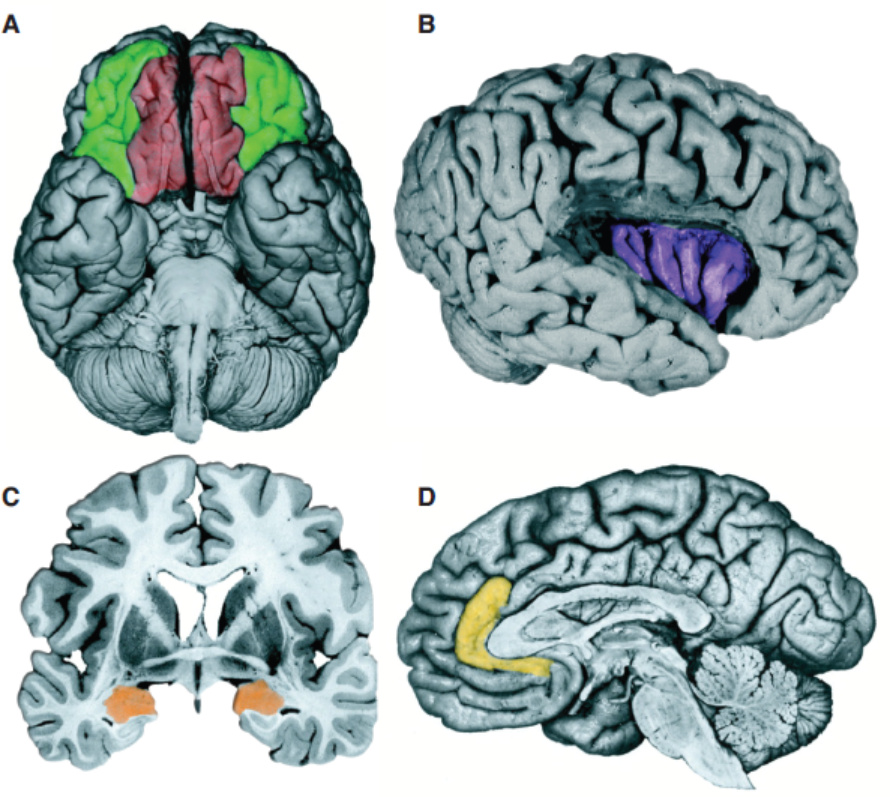
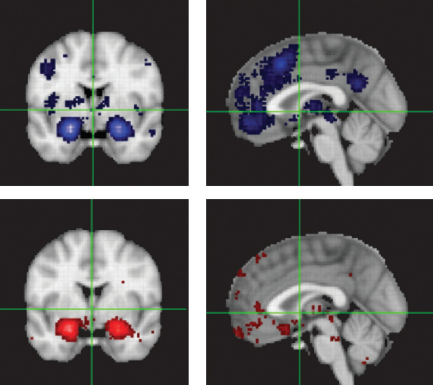
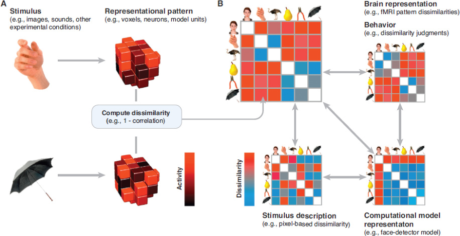

Chương 8 — Công Cụ Và Phương Pháp Trong Thần Kinh Học Con Người
Chương 8 — Công Cụ Và Phương Pháp Trong Thần Kinh Học Con Người
Giống như phần lớn tuyệt đối các nghiên cứu về cảm xúc ở động vật trong lịch sử đều đến từ các nghiên cứu hành vi, phần lớn tuyệt đối các nghiên cứu về cảm xúc ở con người cũng vậy. Tuy vậy, hai dòng công việc lịch sử này phần lớn đã sử dụng những loại phép đo rất khác nhau: ở động vật là các bài kiểm tra hành vi được chuẩn hóa trong phòng thí nghiệm, hay các quan sát tập tính học trong môi trường tự nhiên; còn ở con người là các nghiên cứu về cảm xúc được tự báo cáo trong phòng thí nghiệm. Điều này khiến việc kết nối các nghiên cứu về cảm xúc ở động vật với các nghiên cứu ở con người trở nên khó khăn. Xét đến những gì bạn vừa đọc trong bốn chương trước, người ta có thể hy vọng rằng một cách tiếp cận sinh học thần kinh đối với cảm xúc sẽ đưa việc nghiên cứu động vật và con người lại gần nhau hơn. Phải chăng tất cả các nhà thần kinh học đều dùng chung những công cụ? Thực ra, ngay cả ở đây cũng tồn tại những khác biệt lớn, như chúng ta sẽ thấy. Trong chương này, chúng tôi điểm qua một số cách tiếp cận được dùng để nghiên cứu não trong các nghiên cứu thần kinh học về cảm xúc ở con người, và đối chiếu với những cách tiếp cận được dùng để nghiên cứu não ở động vật — chủ đề của các chương 4–7. Một thách thức lớn sẽ là làm thế nào để bắc cầu nối giữa dữ liệu từ các công cụ như chụp cộng hưởng từ chức năng (fMRI, chủ yếu dùng ở người), vốn đo những tương quan của lưu lượng máu ở các vùng lớn của não, với điện sinh lý, chụp ảnh canxi hay quang di truyền học (thường dùng ở động vật), vốn ghi nhận hoạt động của từng nơ-ron đơn lẻ và can thiệp vào các quần thể tế bào nơ-ron cụ thể (xem hình 4.2).
Một cách để liên hệ các loại phương pháp thần kinh học khác nhau với nhau là diễn đạt lại các câu hỏi của chúng ta ở một tầng trừu tượng hơn. Trong chương 3, chúng tôi đã bàn về những đặc tính xử lý mà các trạng thái cảm xúc trung ương cần phải có để thực hiện các vai trò chức năng của chúng, và những tính chất này của cảm xúc đã phác họa những ràng buộc trừu tượng về tính toán hay kiến trúc mà chúng ta có thể bắt đầu tìm kiếm trong não. Trong chương 4, chúng tôi đã bàn về việc một tầng phân tích trừu tượng hơn về mặt tính toán hay thuật toán như thế
có thể được liên hệ với các phép đo thần kinh học ra sao (hình 4.4). Trong các chương 5, 6 và 7, chúng ta đã thấy rằng quả thật tồn tại những mạch thần kinh cụ thể gây ra các hành vi thuộc về cảm xúc ở động vật, và các mạch này quả thực thể hiện nhiều tính chất mà chúng tôi đã liệt kê cho các trạng thái cảm xúc trong hình 3.2.
Hy vọng rằng những mô tả tương tự có thể bắc cầu nối giữa các tầng phân tích khác nhau cũng sẽ đạt được đối với não người. Chúng ta muốn một câu chuyện liên kết các tiêu chí chức năng (vai trò thích nghi nào đã khiến một cảm xúc được chọn lọc giữ lại?) với các đặc tính xử lý (cần những phép tính gì để đảm nhận vai trò chức năng đó?) với những phát hiện về hiện thực hóa (điều này thực sự được thực hiện trong não ra sao?). Một cách rất sơ lược, ba tầng trừu tượng này tương ứng gì đó với tầng mà nhà tập tính học sử dụng khi quan sát hành vi, tầng mà nhà thần kinh học nhận thức hay hệ thống dùng khi bàn về các đặc tính xử lý và kiến trúc, và tầng mà nhà sinh học thần kinh dùng khi thu thập dữ liệu từ não. Tuy vậy, thực tế phần lớn các nhà thần kinh học hệ thống và nhận thức (bao gồm cả hai tác giả của cuốn sách này) đều sử dụng các phân tích trải khắp cả ba tầng.
Dĩ nhiên, so với các nghiên cứu ở động vật, nghiên cứu cảm xúc ở con người có một lợi thế bề ngoài rất lớn: con người có thể nói và hiểu ngôn ngữ. Sự kiện này, cùng với nhiều cân nhắc thực tiễn và đạo đức khác, đã tạo ra những khác biệt lớn về phương pháp trong các nghiên cứu thần kinh học về cảm xúc ở con người so với ở động vật. Đối tượng người thường được đưa những chỉ dẫn ngắn gọn bằng lời về việc phải làm gì, thường cho biết họ đang làm gì (hoặc rằng họ đã hiểu việc phải làm) qua trao đổi bằng lời, thường không chịu nổi nhiều ngày huấn luyện, vì lý do đạo đức không thể dễ dàng được trình các kích thích khơi dậy những cảm xúc tiêu cực dữ dội, và thường bộc lộ trạng thái cảm xúc qua các báo cáo bằng lời về cảm giác của họ. Vì vậy, huấn luyện hầu như không có, các cảm xúc thường rất nhạt so với những gì được nghiên cứu ở động vật, và quá trình xử lý ngôn ngữ thường bị lôi kéo ở mức độ đáng kể.
Điều này khiến các nghiên cứu ở người thường dễ tiến hành hơn nhiều so với ở động vật: bạn chỉ cần nói với đối tượng phải làm gì thay vì dàn dựng một tình huống hay một quy trình huấn luyện công phu (“hãy nghĩ đến một lúc trong đời bạn cảm thấy thật buồn, rồi kể cho tôi nghe bạn cảm thấy thế nào”). Tuy nhiên, cách tiếp cận này cũng dễ dàng đánh lừa người thí nghiệm tin rằng đối tượng quả thật đang làm những gì người thí nghiệm nghĩ họ đang làm, điều này không phải lúc nào cũng đúng.
Chẳng hạn, điều then chốt là phải diễn giải cẩn thận những gì đối tượng nói, bởi các báo cáo bằng lời về trải nghiệm của họ là dữ liệu thường rất dễ chịu ảnh hưởng từ những niềm tin và kỳ vọng nền tảng của đối tượng, kể cả những kỳ vọng mà chính thí nghiệm đưa vào. Ví dụ, nếu bạn được trả tiền với tư cách đối tượng nghiên cứu và được bảo hãy cảm thấy buồn, rất có thể bạn sẽ báo cáo là đang cảm thấy buồn vì bạn muốn kiếm được số tiền đó, hoặc vì những kỳ vọng xã hội chung của thí nghiệm (cái gọi là đặc tính yêu cầu — demand characteristics). Các nhà tâm lý học rất rõ những phức tạp này và đã thiết kế các bảng hỏi cùng những phép đo phụ thuộc khác có thể giúp xác định chéo một trạng thái cảm xúc. Để những phép đo này có thể khảo sát một cách thuyết phục một trạng thái cảm xúc, chẳng hạn nỗi sợ hãi, chúng phải thể hiện tính hợp lệ khái niệm (construct validity) mạnh — thường là kết quả tương quan cao trên một loạt các phép đo phụ thuộc khác nhau, chứ không chỉ riêng báo cáo bằng lời (hộp 8.1).
Hộp 8.1. Tính hợp lệ của khái niệm
Các nhà khoa học sử dụng những phép đo cụ thể để suy ra sự tồn tại của các biến số nhất định trong lý thuyết của họ. Chẳng hạn, các nhà vật lý dùng rất nhiều dụng cụ tinh vi để suy ra bản chất của các hạt dưới nguyên tử. Các nhà tâm lý học và nhà sinh học có thể dùng các phép đo hành vi hay não bộ để suy ra sự tồn tại của những khái niệm như chú ý hay trí nhớ — hoặc cảm xúc. Điều này đặt ra một câu hỏi hiển nhiên: làm sao bạn biết các phép đo của mình là những chỉ báo tốt cho thứ bạn nghĩ rằng chúng đo?
Khả năng của một tập hợp phép đo tạo ra bằng chứng tốt về một khái niệm nhất định được gọi là “tính hợp lệ của khái niệm”. Đây thực ra là một bó tiêu chí. Một khía cạnh quan trọng của tính hợp lệ là “tính hợp lệ trực quan” (face validity), nghĩa đơn giản là mức độ hợp lý của một phép đo cụ thể nào đó trong việc cung cấp bằng chứng cho một khái niệm nhất định. Nếu tôi có một bảng hỏi chi tiết về các cảm giác sợ hãi và lo âu của bạn, nó có tính hợp lệ trực quan khá hợp lý như một phép đo của nỗi sợ hãi. Nếu tôi đo tín hiệu fMRI ở hạch hạnh nhân của bạn, tính hợp lệ trực quan của nó như một phép đo sợ hãi còn gây nghi ngờ nếu không có thêm rất nhiều thông tin. Nếu tôi chỉ đo huyết áp của bạn, tính hợp lệ trực quan của nó đối với sợ hãi là kém (tự nó, vì ta dễ dàng nghĩ ra những trường hợp huyết áp không liên quan gì đến sợ hãi).
Những ví dụ này làm nổi bật nhu cầu về nhiều phép đo tốt, và dẫn đến hai khía cạnh chính của tính hợp lệ khái niệm: tính hợp lệ hội tụ và tính hợp lệ phân biệt. Nếu chúng ta muốn có bằng chứng thuyết phục về một trạng thái sợ hãi, việc chỉ đo huyết áp hay biểu cảm khuôn mặt không phải là chỉ báo đáng tin lắm. Tuy nhiên, nếu chúng ta đo sự thay đổi huyết áp, sự thay đổi nhịp tim, điểm số trên một bảng hỏi về sợ hãi, biểu cảm khuôn mặt và tín hiệu fMRI, chúng ta có thể dùng tất cả những phép đo này cùng nhau để thu được bằng chứng khá thuyết phục về sợ hãi. Nếu các phép đo này đều được thấy tương quan trong trạng thái sợ hãi, điều đó cung cấp tính hợp lệ hội tụ; dù chúng đang đo cái gì, chúng dường như đang đo cùng một thứ, và nếu ít nhất một phép trong số chúng có tính hợp lệ trực quan đối với việc đo sợ hãi, thì những phép còn lại khi ghép cùng nhau cũng vậy. Ngược lại, chúng ta cũng muốn các phép đo này mang những giá trị khác nhau đối với một cảm xúc khác — huyết áp, tín hiệu fMRI, nhịp tim, biểu cảm khuôn mặt và báo cáo tự thân sẽ trông khác đi nếu người đó đang cảm thấy, chẳng hạn, hạnh phúc thay vì sợ hãi. Nhiều phép đo trong số này, xét riêng lẻ, có thể có tính hợp lệ phân biệt rất kém. Chẳng hạn, các phép đo tự chủ điển hình thu được trong phòng lab (nhịp tim, độ dẫn da, v.v.) không phân biệt rõ ràng giữa các cảm xúc khác nhau (cf. hộp 2.1), tuy vẫn có nghiên cứu tích cực về việc chúng có thể cung cấp tính hợp lệ phân biệt hay không nếu ta nhìn vào các kiểu mẫu trên nhiều phép đo.
Những vấn đề về tính hợp lệ khái niệm này đặc biệt quan trọng trong các nghiên cứu chụp ảnh não ở người, vì thường không có phép đo hành vi bộc lộ ra ngoài, khác với các nghiên cứu ở động vật. Vì đối tượng phải nằm bất động trong máy chụp não, người ta không thể được chụp ảnh khi họ đang gào thét, giẫy giụa hay bỏ chạy. Điều này khiến việc bảo đảm rằng các phép đo phụ thuộc khác (các phép đo hoạt động tự chủ, báo cáo tự thân, biểu cảm khuôn mặt) được xác thực tốt trở nên đặc biệt quan trọng, và lý tưởng là tất cả đều được thu thập cùng lúc và cung cấp bằng chứng nhất quán về cảm xúc mà người thí nghiệm muốn tạo ra trong nghiên cứu.
Những Nghiên Cứu Thần Kinh Học Lịch Sử Về Cảm Xúc Ở Con Người
Trước khi thần kinh học nhận thức hiện đại ra đời (vào những năm 1970 và 1980), và còn lâu trước khi fMRI ra đời (giữa những năm 1990), chỉ có một số ít báo cáo ca lâm sàng dường như cung cấp sự ủng hộ cho giả thuyết rằng có những vùng giải phẫu cụ thể trong não người phụ trách các cảm xúc. Sớm nhất trong số đó là những ca thần kinh học hiếm gặp — trong những ca rõ ràng nhất, là những bệnh nhân có tổn thương ở những phần cụ thể của não (như cũng đúng với những lĩnh vực nhận thức khác, như ngôn ngữ, thị giác và trí nhớ).
Nhiều khả năng ca tổn thương nổi tiếng nhất có liên quan đến cảm xúc là Phineas Gage, người đã được mô tả trong sách vở và bài báo, và tổn thương não của anh ta đã được tái dựng từ rất ít bằng chứng còn tồn tại (Damasio và cộng sự 1994; MacMillan 2000). Tóm tắt lại, đây là câu chuyện của Gage. Gage là một đội trưởng làm việc trong việc xây dựng tuyến đường sắt ở Vermont, nơi phải cho nổ đá để lát đường ray. Để làm điều này, người ta kho một lỗ vào đá, đổ một phần thuốc súng vào, đầm chặt bằng một thanh sắt, rồi cho nổ từ khoảng cách an toàn. Vào một ngày định mệnh năm 1848, một tai nạn khá rùng rợn đã xảy ra. Gage đổ thuốc súng vào một trong các lỗ và bắt đầu đầm chặt bằng thanh sắt. Khi đang đầm, thanh sắt đầm của anh ta va vào đá tạo ra tia lửa. Thuốc súng nổ tung, bắn thanh sắt vọt khỏi lỗ như một viên đạn dài thoát khỏi nòng súng. Thanh sắt hất vào đầu Gage, và thực tế đã xuyên thủng đầu anh ta, đi vào ngay dưới mắt và thoát ra ở đỉnh đầu, rồi rơi cách đó một quãng, phủ máu và những mảnh não của Gage. Kỳ diệu nhất, Gage không chết. Anh ta sống thêm nhiều năm sau tai nạn này, nhưng với một tổn thương lớn trong não. Vì ca của anh xảy ra năm 1848, không có chụp ảnh não nào để định vị tổn thương, và việc tái dựng phải dựa vào một chút công việc trinh sát dựa trên hộp sọ của anh (vẫn còn được giữ), báo cáo về tai nạn, và những tư liệu khác còn có được. Hanna và Antonio Damasio, khi đó ở Đại học Iowa, đã thực hiện một cuộc trinh sát, phát hiện rằng những phần cụ thể của vỏ não trước trán (vỏ não trước trán trung-thất, hay vmPFC) đã bị tổn thương trong não của Gage (Damasio và cộng sự 1994).
Sự liên quan đến thần kinh học nhận thức tập trung vào những khiếm khuyết mà tổn thương não đó gây ra cho Gage. Đáng tiếc là điều này đã khá mơ hồ, vì không chỉ năm 1848 chưa có máy MRI, mà thậm chí không hề có phân tích giải phẫu tử thi não của Gage. Cũng có
không mấy gì sẵn có về mặt các bài kiểm tra hành vi hiện đại đối với các chức năng nhận thức. Một lần nữa, chúng ta phải dựa vào các báo cáo của gia đình, bạn bè và bác sĩ được ghi lại thời điểm đó. Dường như có sự đồng thuận rằng hành vi của Gage đã bị thay đổi rõ rệt. Nhưng có ít đồng thuận hơn nhiều về chính xác sự thay đổi đó gồm những gì. Gage đưa ra những quyết định tồi trong cuộc sống và rõ ràng gặp khó khăn trong việc giữ được công việc và giữ được những người bạn cũ. Do tính chất độc nhất, thiếu phân tích và vốn dĩ chỉ là giai thoại của ca này, sẽ mãi không rõ những thay đổi này có thể quy hoàn toàn cho tổn thương của anh, hay chúng có thể cũng nảy sinh — hoặc có lẽ chỉ nảy sinh — từ bất kỳ nguyên nhân nào khác trong cuộc đời anh mà ca này không kiểm soát được. Quan trọng là, chúng ta không biết liệu một tổn thương não nghiêm trọng tương tự ở bất kỳ nơi nào khác trong não có thể dẫn đến một suy giảm tương tự hay không. Dù sao, hành vi thuộc về cảm xúc của Gage đã bị thay đổi — anh ta được mô tả là trở nên vô cảm, tục tĩu, và biểu hiện những cảm xúc thiếu kiểm soát.
Ca đơn lẻ này đã thúc đẩy giả thuyết rằng vỏ não trước trán, và có lẽ đặc biệt là vmPFC (những vùng bị tổn thương trong não Gage, dù không phải những vùng duy nhất bị tổn thương), có liên quan gì đó đến cảm xúc. Nếu ta lướt nhanh tới 150 năm sau, chúng ta thấy một số nghiên cứu tổn thương hiện đại hơn (những nghiên cứu tiên phong từ chính nhóm của hai vợ chồng Damasio ở Đại học Iowa) quả thực phần lớn ủng hộ giả thuyết đó. Những nghiên cứu tổn thương hiện đại này có sẵn MRI cấu trúc hay CT, nên có thể xác định tổn thương giải phẫu nguyên phát ít nhất ở mức phân giải mà phương pháp này cho phép (khoảng một milimét), và chúng bao gồm nhiều bài kiểm tra hành vi và nhận thức mở rộng và chuẩn hóa hơn nhiều để đánh giá suy giảm do tổn thương gây ra.
Tổn thương ở những bệnh nhân hiện đại này thường do cắt bỏ khối u, hoặc có lẽ cắt bỏ chứng phình động mạch (sự phình ra của mạch máu), vốn cụ thể hơn nhiều so với việc một thanh sắt xuyên qua đầu bạn (nhưng kém cụ thể hơn nhiều so với tổn thương thực nghiệm ở động vật). Trong khi tổn thương không mơ hồ đối với vỏ não trước trán có thể được xác nhận bằng MRI cấu trúc, nhìn chung vẫn có tổn thương biến đổi ở chất trắng hay các vùng dưới vỏ như não trước nền. Có lẽ một phần do sự biến đổi về vị trí và phạm vi của tổn thương não, vẫn còn nhiều khác biệt đáng kể về những suy giảm hành vi được tạo ra giữa các nghiên cứu này. Đã có các báo cáo về sự suy giảm trong
việc nhận diện cảm xúc từ biểu cảm khuôn mặt (Hornak, Rolls và Wade 1996), đã có báo cáo về các cảm xúc mất điều hòa như giận dữ (Koenigs và Tranel 2007), và về những cảm xúc xã hội cùng sự thấu cảm bị lụn bại (Koenigs và cộng sự 2007). Dù những phát hiện này đều có liên quan đến cảm xúc, việc đánh giá các bệnh nhân nhìn chung không tập trung cụ thể vào các trạng thái cảm xúc (ba bài báo nêu trên lần lượt tập trung vào việc phán đoán phạm trù cảm xúc từ biểu cảm khuôn mặt, vào các lựa chọn tiền bạc trong các trò chơi kinh tế, và vào các phán đoán đạo đức). Vì vậy, cũng như đối với các nghiên cứu fMRI (xem thêm chương 8), có một sự khác biệt khổng lồ ngay trong việc các nhà thí nghiệm hiểu từ “cảm xúc” như thế nào trong bài báo của họ, khiến việc so sánh giữa các nghiên cứu và rút ra kết luận khái quát từ chúng trở nên khó khăn.
Cũng có những báo cáo cụ thể hơn về hành vi thuộc về cảm xúc bị thay đổi và về trải nghiệm cảm xúc được tự báo cáo ở những bệnh nhân có tổn thương vỏ não trước trán, khiến lĩnh vực cảm xúc này có tính nhất quán hơn những nghiên cứu vừa đề cập (Hornak và cộng sự 2003; Anderson và cộng sự 2006). Dù vậy, việc đánh giá cảm xúc trong những ca này vẫn rất thách thức: dữ liệu tự báo cáo đặc biệt phiền toái, vì người ta biết rằng vỏ não trước trán quan trọng cho việc tự nhận thức tình trạng của chính mình. Thực tế, dù gặp những khó khăn rõ ràng sâu sắc trong đời sống, những bệnh nhân này thường phủ nhận rằng có gì đó không ổn với họ. Làm vấn đề thêm rối, hiếm khi có những phép đo cảm xúc tương đương trước và sau tổn thương, vì các bệnh nhân không vào tầm mắt các nhà khoa học cho tới khi họ đã mang tổn thương. Hệ quả là sức mạnh của các nghiên cứu tổn thương trong cùng đối tượng, vốn phổ biến trong nghiên cứu động vật, thường không có được trong các nghiên cứu ở người.
Trong tất cả những nghiên cứu này, vẫn chưa rõ chính xác điều gì đang diễn ra trong não. Nghĩa là, chúng ta có thể thấy, trên các ảnh MRI cấu trúc, rằng có một tổn thương khu trú ở vỏ não trước trán, thường xảy ra cách đây nhiều năm. Nhưng chúng ta cũng muốn biết chức năng của phần còn lại của não bây giờ trông thế nào: liệu đã có những thay đổi lâu dài ở nơi khác chưa? Kiểu mẫu kích hoạt so với những gì thường thấy ở người khỏe mạnh được kiểm tra trên cùng nhiệm vụ (hay thấy ở cùng bệnh nhân trước tổn thương) ra sao? Chỉ biết rằng một vùng bị tổn thương cho ta biết rất ít về việc điều này thay đổi chức năng ở nơi khác trong não ra sao — điều mà cuối cùng ta cần biết để giải thích cách hành vi bị thay đổi có thể được tạo ra, và điều mà cuối cùng chúng ta
cần biết để có thể mô tả đầy đủ bất kỳ trạng thái cảm xúc trung ương bị thay đổi nào (điểm này cũng áp dụng ở mức độ nào đó cho các nghiên cứu quang di truyền ở động vật). Chẳng hạn, đã được chứng minh rằng tổn thương ở vỏ não trước trán trung-thất gây ra những thay đổi trong kích hoạt fMRI bên trong các cấu trúc được kết nối với vùng não này, như hạch hạnh nhân (Motzkin và cộng sự 2015). Cũng có những giới hạn hiển nhiên về điều kiện đối chứng đầy đủ, sự thiếu hụt chung của dữ liệu trong cùng đối tượng (các so sánh trước và sau tổn thương thường không thể thực hiện, vì tổn thương không được tạo ra bằng thực nghiệm — một vấn đề mà chúng tôi đã đề cập), sự thiếu chính xác và không thể kiểm soát của chính tổn thương, và khả năng bù trừ và tái tổ chức trong não sau một tổn thương mạn tính. Đây đều là những khác biệt lớn so với các nghiên cứu được kiểm soát chặt chẽ ở động vật mà chúng ta vừa điểm lại. Trong khi các nghiên cứu tổn thương ở người vẫn cực kỳ giá trị, việc diễn giải kết quả của chúng đầy thách thức và nhìn chung đòi hỏi dữ liệu bổ chứng từ các kỹ thuật hay các loài khác.
Tất cả những điều này có thể khiến bạn nghĩ rằng các nghiên cứu tổn thương ở người có những giới hạn nghiêm trọng đến mức triệt tiêu giá trị khoa học, nhưng kết luận gay gắt này là quá vội vàng. Một mặt, mọi phương pháp đều có điểm mạnh và điểm hạn chế của riêng mình, và các nghiên cứu tổn thương ở người vẫn có giá trị trong việc thiết lập vai trò cần thiết của một cấu trúc não — một loại thông tin mà các phương pháp tương quan như fMRI không thể cung cấp. Mặt khác, quả là hoàn toàn có thể kết hợp các nghiên cứu tổn thương với fMRI trên chính những bệnh nhân đó, và đây có nhiều khả năng sẽ là một nguồn dữ liệu mới đáng kể trong tương lai. Cũng đáng lưu ý rằng nhiều — có lẽ là phần lớn — những giới hạn đã nêu ở trên có thể được cải thiện đáng kể chỉ bằng cách tăng quy mô mẫu và áp dụng các nhiệm vụ nhất quán hơn trên các bệnh nhân, nếu cộng đồng nghiên cứu có nỗ lực. Không hề thiếu bệnh nhân bị đột quỵ và khối u, chỉ là thiếu hạ tầng để đưa họ vào một liên minh nghiên cứu lớn (Adolphs 2016).
Một số nghiên cứu quả đã dùng các mẫu gồm vài trăm đối tượng bị tổn thương, và đã dùng các kỹ thuật lập bản đồ thống kê dựa trên voxel tinh vi để phân tích mối quan hệ giữa tổn thương não khu trú và các suy giảm cụ thể trên cả nhóm như vậy. Những nghiên cứu đó đã có thể cung cấp một tập kết luận chi tiết hơn nhiều và vững chắc hơn về mặt thống kê. Thông điệp rút ra là phần lớn các nghiên cứu tổn thương đã công bố cần được xem xét thận trọng (đặc biệt là các nghiên cứu cũ hơn) và
hiếm khi cung cấp kết luận rõ ràng về các hệ thần kinh nằm dưới các cảm xúc — nhưng các nghiên cứu tổn thương hiện đại (dùng mẫu lớn và phương pháp mới hơn, cũng như kết hợp tổn thương với fMRI) đang cải thiện đáng kể tình trạng này.
Vỏ não trước trán hiện là một trong những vùng được nghiên cứu nhiều nhất về cảm xúc ở người bằng fMRI. Thực tế, nó phù hợp hơn với việc nghiên cứu bằng fMRI so với hạch hạnh nhân, vì lý do kỹ thuật, tín hiệu fMRI thường tốt hơn nhiều ở vỏ não so với ở hạch hạnh nhân. Vỏ não trước trán là một vùng não lớn hơn một cách mất cân xứng ở các loài linh trưởng so với các động vật khác. Nó gồm nhiều phân khu khác nhau, mỗi phân khu đều góp phần vào việc xử lý cảm xúc (hình 8.1 chỉ hiển thị rất ít trong số đó). Ở người, các chức năng của vỏ não trước trán liên quan đến cảm xúc đã được quan niệm như những sự đánh giá đặc thù theo nội dung. Như vậy, mỗi phân khu khác nhau đã được gắn với những đánh giá cảm xúc thuộc các loại khác nhau: đánh giá các cảm nhận từ ngoài cơ thể, đánh giá các ký ức và các sự kiện tương lai được tưởng tượng, đánh giá các tín hiệu cảm nhận nội tạng, v.v. (xem Dixon và cộng sự 2017 để có bài tổng quan). Người ta cho rằng điều này đạt được nhờ sự kết nối rộng khắp của vỏ não trước trán; mỗi phân khu khác nhau hiện thực hóa chức năng cảm xúc của mình bằng cách đóng vai trò như một trạm trung chuyển nhận đầu vào từ một mạng lưới các vùng não khác. Chẳng hạn, người ta cho rằng phần bụng và phần trước của vỏ não vành có liên hệ gần nhất với các kết nối tới các thành phần nội tạng và tự chủ của cảm xúc, trong khi vỏ não trước trán ngoài có liên hệ gần nhất với việc điều hòa cảm xúc (xem hộp 3.4). Dù còn khá sơ khởi, một sơ đồ như vậy sẽ giúp chúng ta cuối cùng hiểu được những cách rất phức tạp và gián tiếp mà các trạng thái cảm xúc có thể được khơi dậy và phối hợp ở người.
Ngoài vỏ não trước trán trung-thất, hai vùng khác của não người được cho là liên quan đến cảm xúc đã được làm nổi bật qua các nghiên cứu ca tổn thương. Một trong số đó là thùy đảo, vùng thứ hai là hạch hạnh nhân (hình 8.1). Hai cấu trúc này đặc biệt được quan tâm vì chúng thực sự là những ứng viên duy nhất cho tới nay đối với các vùng não tham gia mất cân xứng vào một cảm xúc người đơn lẻ, cụ thể (Calder, Lawrence và Young 2001). Thùy đảo chiếm khoảng 2 phần trăm vỏ não của chúng ta nhưng hoàn toàn không thể nhìn thấy khi nhìn não từ bên ngoài. Nó nằm chìm sâu trong não và gồm vài vùng riêng biệt. Các chức năng của nó vẫn đang được nghiên cứu nhiều và trải từ việc xử lý
các tín hiệu vị giác và nội tạng cùng cơn đau cho đến việc xử lý các cảm xúc xã hội phức tạp (xem Nieuwenhuys 2012 để có bài tổng quan).

Hình 8.1: Các vùng não được nghiên cứu phổ biến trong cảm xúc ở người. A: vỏ não hốc mắt trong (màu đỏ) và ngoài (màu xanh lục), là những phần của vỏ não trước trán; B: thùy đảo, là một vùng vỏ não biểu diễn các trạng thái cơ thể, nằm chìm dưới thùy trán (được cắt bớt một phần trong hình này để có thể nhìn thấy thùy đảo [màu tím] bên dưới); C: hạch hạnh nhân, nằm ở thùy thái dương trong và được hiển thị ở đây màu cam trên một mặt cắt coronal của não; D: vỏ não vành trước (màu vàng), cũng chồng lấn với vỏ não trước trán trung-thất. Tổn thương ở từng vùng này đã được liên hệ với: cảm xúc lụn bại hoặc mất điều hòa (A), suy giảm ghê tởm (B), suy giảm sợ hãi (C), và thiếu sự hưng phấn cùng động lực thuộc về cảm xúc (D). Vùng dưới đồi và chất xám quanh ống dẫn nước cũng tham gia vào các cảm xúc ở người, giống như chúng tham gia vào các cảm xúc ở động vật, nhưng hiếm khi được nghiên cứu, một phần vì khó phân giải chúng bằng fMRI.
Thùy đảo đã được gắn với ghê tởm dựa trên dữ liệu kích thích điện, tổn thương và fMRI. Nó được kích hoạt trên cả một loạt rộng các kích thích và nhiệm vụ, từ việc nếm, ngửi hay nghĩ về những thức ăn gây ghê tởm, đến việc nhìn thấy ai đó ghê tởm (chẳng hạn, qua biểu cảm khuôn mặt của họ), cho đến các phán đoán đạo đức có yếu tố ghê tởm. Thực tế, thùy đảo được kích hoạt trên tất cả các dạng ghê tởm khác nhau mà chúng tôi đã trình bày trong hình 1.3. Đây là một ví dụ thú vị về dữ liệu thần kinh học (sự kích hoạt chung của một vùng não chung) ủng hộ một giả thuyết chức năng (rằng các dạng ghê tởm chia sẻ những tính chất chức năng và thuật toán). Mối liên hệ giữa thùy đảo và ghê tởm có ý nghĩa giải phẫu nhất định, vì thùy đảo biểu diễn thông tin cảm nhận nội tạng từ cơ thể — chẳng hạn các tín hiệu từ dạ dày khiến bạn thấy buồn nôn. Điều thú vị là có một sự tương ứng chặt chẽ giữa các biểu diễn cảm giác liên quan đến ghê tởm (ví dụ, vị khó chịu), các cảm giác nội tạng (ví dụ, buồn nôn), và cả trải nghiệm chủ quan của ghê tởm — tất cả những điều này đều kích hoạt thùy đảo, dù các khía cạnh cảm xúc phức tạp hơn của một trải nghiệm chủ quan kích hoạt các vùng thùy đảo trước hơn so với các khía cạnh cảm giác hơn. Điều này khiến thùy đảo trở thành một cấu trúc thường gặp trong các lý thuyết về trải nghiệm chủ quan của cảm xúc. Một số lý thuyết lập luận rằng thùy đảo, cùng với vỏ não trước trán trong và hạch hạnh nhân, là một phần của mạng lưới biểu diễn, duy trì và dự đoán các trạng thái cơ thể của chính chúng ta. Đặc biệt, chức năng dự đoán của hệ não này đã được làm nổi bật trong các lý thuyết về các cảm giác thuộc về cảm xúc (Seth 2013; Feldman Barrett 2017), nhấn mạnh rằng các cảm xúc không chỉ đơn thuần là phản ứng với kích thích mà còn phụ thuộc vào những kỳ vọng (xem chương 10).
Hạch hạnh nhân đã được gắn với việc xử lý sợ hãi, cũng như trong các nghiên cứu ở động vật mà chúng tôi đã điểm lại trong chương 6, và có lẽ cấu thành trường hợp thuyết phục nhất về sự tham gia cần thiết của một vùng não đối với một cảm xúc cụ thể. Điều này không có nghĩa là hạch hạnh nhân chỉ xử lý sợ hãi — chúng ta biết từ các nghiên cứu điện sinh lý và fMRI rằng nhiều loại tín hiệu cảm xúc khác nhau được xử lý bởi các mạch thần kinh trong hạch hạnh nhân (xem chương 6). Nhưng các tổn thương khu trú quả có vẻ gây ra những suy giảm nghiêm trọng nhất chỉ riêng đối với sợ hãi (hộp 8.2). Thú vị là cả tổn thương hạch hạnh nhân lẫn tổn thương thùy đảo đều được báo cáo làm suy giảm cả việc nhận biết lẫn trải nghiệm cảm xúc (lần lượt là sợ hãi và ghê tởm) (Calder, Lawrence và Young 2001). Điều này đã
ủng hộ một giả thuyết có ảnh hưởng rất lớn: khả năng nhận biết cảm xúc ở người khác phụ thuộc vào việc có thể tự cảm nhận cảm xúc đó (Goldman và Sripada 2005).
Hộp 8.2. Bệnh nhân S.M. và các sự tách rời của nỗi sợ hãi
Có lẽ bệnh nhân hiện đại nổi tiếng nhất trong thần kinh học của cảm xúc là một người phụ nữ tên S.M., cuộc đời thuộc về cảm xúc của cô đã được nghiên cứu rất kỹ (Feinstein và cộng sự 2011; Feinstein và cộng sự 2016). S.M. vào tầm mắt của Daniel Tranel và Antonio Damasio ở Đại học Iowa vào khoảng năm 1990 vì cô mang một tổn thương não cực hiếm: tổn thương song bên hạch hạnh nhân. Tổn thương do một bệnh di truyền gây ra, bệnh Urbach-Wiethe, vốn bắt nguồn từ một đột biến trong gen mã hóa một protein gọi là protein ma trận ngoại bào-1 (nhưng không ai có bất kỳ ý niệm nào về việc đột biến gen này gây ra tổn thương não ra sao).
Hồ sơ thần kinh tâm lý tổng thể của S.M. không có gì đặc biệt. Trí thông minh, trí nhớ, thị giác, ngôn ngữ và các khả năng nhận thức và tri giác cơ bản khác của cô đều nằm rộng rãi trong phạm vi bình thường. Tuy vậy, cô thể hiện những suy giảm chọn lọc cao trong các lĩnh vực liên quan đến xử lý sợ hãi. Chẳng hạn, cô không thể hiện phản ứng độ dẫn da trong điều kiện hóa sợ hãi kiểu Pavlov (dù cô có trí nhớ khai báo về các liên kết US-CS); cô gặp khó khăn trong nhận biết biểu cảm khuôn mặt của sợ hãi (nhưng có thể nhận biết biểu cảm khuôn mặt của các cảm xúc khác); và cô có vẻ không cảm thấy sợ hãi (nhưng trải nghiệm các cảm xúc khác một cách bình thường).
Đã có hai kết quả đặc biệt quan trọng từ các nghiên cứu với S.M. Một kết quả là một giả thuyết về một cơ chế não, được trung gian một phần bởi hạch hạnh nhân, nhờ đó chúng ta nhận biết cảm xúc từ biểu cảm khuôn mặt. Giả thuyết này đề xuất rằng việc phân bổ sự chú ý thị giác vào các đặc điểm cụ thể của khuôn mặt (đáng chú ý là vùng mắt của khuôn mặt) là một thành phần cho phép khả năng phán đoán sợ hãi từ biểu cảm khuôn mặt của chúng ta. S.M. bị suy giảm trong nhận biết sợ hãi từ biểu cảm khuôn mặt, nhưng cũng không tự phát sử dụng thông tin từ vùng mắt của khuôn mặt, và thực tế không nhìn vào mắt trong
các khuôn mặt (hình 8.2). Việc hướng dẫn cô nhìn vào mắt trong các khuôn mặt quả thật cải thiện khả năng nhận biết sợ hãi của cô — một sự ủng hộ cho một cơ chế nhân quả theo đó tổn thương hạch hạnh nhân làm suy giảm việc nhận biết sợ hãi vì chúng làm suy giảm một cơ chế chú ý tới các đặc điểm liên quan đến sợ hãi trong khuôn mặt (đôi mắt mở to) (Adolphs và cộng sự 2005a).
Một kết quả quan trọng thứ hai từ nghiên cứu S.M. là sự chứng minh của các sự tách rời cụ thể giúp chúng ta thực hiện những phân biệt có căn cứ khoa học. Như đã lưu ý, S.M. bị suy giảm mất cân xứng trong lĩnh vực sợ hãi, so với tất cả các cảm xúc khác, đây là bằng chứng thuyết phục rằng sợ hãi là một phạm trù cảm xúc riêng biệt. Một sự tách rời rất quan trọng khác cho thấy có một số dạng sợ hãi dường như còn nguyên vẹn, thậm chí bị khuếch đại, ở cô. Ví dụ, dù cô bị suy giảm cả trong khả năng nhận biết sợ hãi từ khuôn mặt lẫn trong việc trải nghiệm sợ hãi từ phim kinh dị hay các kích thích bên ngoài khác, cô trải nghiệm cơn hoảng loạn được gây ra bằng cách hít khí carbon dioxide (Feinstein và cộng sự 2013). Điều này gây ra một cảm giác như thể đang bị ngạt thở, và khoảng một phần tư số người khỏe mạnh trải nghiệm một cơn hoảng loạn. S.M. và hai bệnh nhân khác có tổn thương hạch hạnh nhân song bên đều trải nghiệm hoảng loạn dữ dội khi hít khí carbon dioxide, chứng minh rằng trạng thái hoảng loạn bắt nguồn từ các tín hiệu ngạt thở không đòi hỏi hạch hạnh nhân. Như vậy, sợ hãi từ ngoài cơ thể và hoảng loạn từ cảm nhận nội tạng có vẻ là hai trạng thái “sợ hãi” phân biệt nhau về mặt sinh học thần kinh.
Một sự tách rời then chốt khác thể hiện ở S.M. là cô có một khái niệm về sợ hãi phần lớn còn nguyên vẹn, dù cô không thể nhận biết sợ hãi trong khuôn mặt, và dù cô không trải nghiệm sợ hãi. Khi bạn hỏi S.M. sợ hãi là gì, cô có thể nói với bạn rằng bạn sẽ cảm thấy sợ hãi nếu bị một con gấu đuổi, hay rằng những người sợ hãi có xu hướng gào lên và bỏ chạy. Cô có thể dùng từ sợ hãi một cách phù hợp trong hội thoại. Một lý do cho khái niệm sợ hãi dường như nguyên vẹn của cô có thể là, ở con người, chúng ta chủ yếu dựa vào ngôn ngữ để đánh giá khái niệm sợ hãi của một người. S.M. có khả năng ngôn ngữ nguyên vẹn và trí nhớ khai báo nguyên vẹn để củng cố các ký ức ngữ nghĩa về những sự thật có thể được biểu hiện bằng từ ngữ. Cô đọc sách, xem phim, và trò chuyện với người khác. Vậy là cô sẽ đã thu nhận được phần lớn kiến thức khái niệm về sợ hãi mà mọi người có thể nói đến và suy nghĩ bằng ngôn ngữ,
thậm chí khi bản thân cô không trải nghiệm sợ hãi. Những sự tách rời này rất quan trọng, vì chúng cho chúng ta thấy rằng kiến thức khái niệm về các cảm xúc phần lớn có thể được tách khỏi việc thực sự có cảm xúc đó, hay việc nhận biết cảm xúc từ các kích thích phi từ vựng như biểu cảm khuôn mặt. Khái niệm của một cảm xúc, trải nghiệm chủ quan của một cảm xúc, và chính trạng thái cảm xúc là ba thứ khác nhau.

Hình 8.2: Tổn thương hạch hạnh nhân làm suy giảm việc xử lý thông tin từ vùng mắt của khuôn mặt. Dữ liệu từ bệnh nhân S.M., người có tổn thương hạch hạnh nhân song bên hoàn toàn và bị suy giảm trong việc nhận biết sợ hãi. (a) Các vùng của khuôn mặt mà đối tượng dùng để nhận biết cảm xúc. Bệnh nhân S.M. khác với nhóm đối chứng ở chỗ sử dụng ít hơn nhiều vùng mắt của các khuôn mặt. (b) Khi nhìn khuôn mặt, S.M. (bên phải) tạo ra ít lần cố định nhìn vào mắt hơn so với các đối tượng đối chứng (bên trái). Các đường trắng hiển thị các cử động mắt do đối tượng thực hiện khi họ nhìn những khuôn mặt này. (c) Tổn thương hạch hạnh nhân của S.M. có thể thấy trong ảnh MRI (các vùng tròn màu đen gần đỉnh của ảnh). (d) Khi S.M. được hướng dẫn nhìn vào mắt (“SM eyes”) trong một khuôn mặt toàn phần, điều này dẫn đến sự hồi phục đáng kể trong khả năng nhận biết biểu cảm sợ hãi (“SM eyes,” mũi tên) so với độ chính xác của cô trước chỉ dẫn này (“SM free”). Chỉnh sửa với sự cho phép từ Adolphs và cộng sự 2005a.
Một cách tiếp cận khác để thiết lập các quan hệ nhân quả giữa một vùng não và cảm xúc là kích thích điện. Điều này có thể được thực hiện ở những bệnh nhân phẫu thuật thần kinh người trong một số hoàn cảnh nhất định, và có nhiều giới hạn giống như các nghiên cứu tổn thương: quy mô mẫu rất nhỏ, và phạm vi cùng vị trí của kích thích được kiểm soát kém. Hệ quả là, các hiệu ứng thường rất biến đổi. Dù vậy, cũng như với các nghiên cứu tổn thương, thỉnh thoảng người ta vẫn gặp những hiệu ứng đặc hiệu đáng kinh ngạc: kích thích điện các hạch nền có thể gây ra nỗi buồn dữ dội, và kích thích vỏ não trước vận động có thể gây ra sự vui thích và tiếng cười, chẳng hạn. Và các nghiên cứu kích thích điện kinh điển trên thùy đảo đã tạo ra cảm giác ghê tởm hoặc giống buồn nôn, trong khi kích thích điện hạch hạnh nhân đã tạo ra những suy nghĩ, ký ức và trải nghiệm chủ quan liên quan đến sợ hãi. Tuy vậy, như chúng tôi đã lưu ý trong các chương trước, những phát hiện này khó có thể quy cho việc kích thích chọn lọc các nơ-ron trong thùy đảo hay trong hạch hạnh nhân, vì những vùng mô não lớn được kích thích, bao gồm cả nơ-ron và sợi trục.
Dù vậy, khi khảo sát tài liệu từ các nghiên cứu kích thích điện, ba kết luận rộng dường như hiển nhiên (Guillory và Bujarski 2014). Thứ nhất, các khía cạnh của cảm xúc (thường là các báo cáo về trải nghiệm chủ quan của một cảm xúc) có thể được khơi dậy từ nhiều vùng vỏ não và dưới vỏ khác nhau. Thứ hai, quả có vẻ tồn tại tính đặc hiệu nào đó, và nhiều vùng mà chúng ta đã gặp (thùy đảo, hạch hạnh nhân, chất xám quanh ống dẫn nước) có thể khơi dậy cảm xúc khi được kích thích. Tuy nhiên, kết luận này bị giới hạn bởi thực tế là có một thiên lệch lấy mẫu nghiêm trọng khi các bác sĩ phẫu thuật thần kinh cấy điện cực và kích thích — các vùng não để kích thích không được chọn một cách ngẫu nhiên hay đồng đều. Thứ ba, cũng có tính đặc hiệu rõ ràng đối với một số phạm trù cảm xúc nhất định. Một số lần kích thích khơi dậy hạnh phúc, một số buồn bã, một số ghê tởm, một số sợ hãi. Dù các phạm trù cảm xúc chính xác được khơi dậy còn khá mơ hồ và bằng chứng thường rất thưa, thông thường không phải việc kích thích cùng một vị trí lại khơi dậy đủ mọi loại cảm xúc khác nhau.
Các nghiên cứu tương tự với mẫu đối tượng lớn hơn và điều kiện kiểm soát tốt hơn là có thể thực hiện bằng các kỹ thuật như kích thích từ xuyên sọ (TMS). Tuy nhiên, TMS có độ phân giải không gian khá kém. Hiện vẫn đang có công việc phát triển các phương pháp nhiễu loạn an toàn có thể áp dụng lên não người với tính đặc hiệu không gian và thời gian tốt hơn (chẳng hạn, gây rối bằng siêu âm hội tụ). Các công cụ sẵn có để nhiễu loạn chức năng não người vì vậy có thể sẽ trông chính xác hơn nhiều trong tương lai gần — tuy nhiên, khả năng cao chúng vẫn khó phân biệt được các quần thể
nơ-ron cụ thể trong thời gian sắp tới, vì các nghiên cứu quang di truyền hay dược di truyền cho tới nay vẫn chỉ giới hạn ở động vật vì lý do đạo đức (hộp 5.5).
Xét đến tính đặc hiệu giải phẫu kém của cả các nghiên cứu tổn thương lẫn nghiên cứu kích thích điện, khả năng kiểm soát kém đối với các biến nhiễu, và số đối tượng thường rất nhỏ, có vẻ khó biết nên rút ra kết luận gì từ chúng. Chúng tôi sẽ rút ra hai kết luận chính. Thứ nhất, dù có sự biến đổi khổng lồ, ngay cả các ca đơn lẻ cũng có thể đủ để chứng minh những quan hệ nhân quả cụ thể, hay để chỉ ra cho chúng ta bằng logic những sự tách rời có thể có. Một kết luận từ các nghiên cứu tổn thương là những cảm xúc riêng lẻ, cụ thể có thể bị suy giảm tương đối độc lập, ít nhất đối với trường hợp sợ hãi, và ở mức độ nào đó đối với trường hợp ghê tởm. Việc neo điều này cụ thể vào hạch hạnh nhân và thùy đảo thì rắc rối hơn, do độ phân giải giải phẫu không đầy đủ, nhưng cũng không cần thiết để kết luận rằng có sự tách biệt giải phẫu nào đó cho việc xử lý từng cảm xúc riêng lẻ trong não. Người ta thường đã rút ra một số kết luận mạnh hơn nhiều, chẳng hạn rằng hạch hạnh nhân chỉ tham gia vào xử lý sợ hãi, hay rằng chỉ có hạch hạnh nhân tham gia vào xử lý sợ hãi, nhưng những điều này hoàn toàn không có căn cứ và dựa trên một logic sai lệch, như chúng tôi đã chỉ ra trong chương 4. Vì vậy, dù những kết luận chúng ta có thể rút ra bị giới hạn cả về mặt giải phẫu lẫn khái niệm, dữ liệu quả cho thấy có những hệ não cụ thể có thể là cần thiết hay đủ đối với các thành phần cụ thể của một số cảm xúc nhất định ở người.
Điều đáng lưu ý là chính số nhỏ các nghiên cứu tổn thương và kích thích điện kinh điển này ở người đã phần lớn nuôi dưỡng các giả thuyết giải phẫu cụ thể về cảm xúc mà tới nay vẫn được kiểm nghiệm, bằng fMRI ở người, và bằng quang di truyền học, chụp ảnh canxi và các phương pháp khác ở động vật. Như vậy, dù hạch hạnh nhân chỉ là một trong hàng trăm hay hàng nghìn vùng não phân biệt về mặt giải phẫu, phần lớn tuyệt đối các nghiên cứu về não trong cảm xúc (cả ở người lẫn ở động vật) đã tập trung vào hạch hạnh nhân. Một hướng đi quan trọng trong tương lai sẽ là nghiên cứu các hệ thần kinh cho cảm xúc với một lăng kính ít thiên lệch giải phẫu hơn — điều mà fMRI toàn não nay đang thực hiện thường quy.
Đây là một điểm quan trọng: nếu bạn tìm kiếm trong tài liệu, bạn sẽ thấy bằng chứng bề ngoài thuyết phục rằng các vùng não cụ thể tham gia vào cảm xúc, chẳng hạn vỏ não trước trán và hạch hạnh nhân. Nhưng điều này có thể đơn giản phản ánh một thiên lệch mạnh rằng đây là những vùng chính mà
các nhà thí nghiệm thực sự đã nhìn vào trong não, hay những gì họ đã chọn công bố. Những thiên lệch như vậy rất nổi tiếng và cần được hiệu chỉnh nếu ai đó thực hiện các phân tích tổng hợp đơn giản hóa trên các nghiên cứu đã công bố.
Chẳng hạn, một công cụ hiện đại để khai thác tài liệu fMRI, một chương trình gọi là “Neurosynth” do nhà thần kinh học nhận thức Tal Yarkoni phát triển, cho phép bạn trực quan hóa nơi nào trong não có kích hoạt trên các bài báo công bố có chứa những từ khóa nhất định (Yarkoni và cộng sự 2011). Nếu bạn gõ vào từ “emotion” (cảm xúc), bạn nhận được 790 nghiên cứu trong cơ sở dữ liệu (chắc chắn sẽ là một con số lớn hơn nhiều vào lúc bạn đọc cuốn sách này), phản ánh hơn 28.000 kích hoạt fMRI được báo cáo đã vượt qua một ngưỡng thống kê đáng báo cáo. Tất cả các bài báo này đều có từ “emotion” trong tóm tắt và có điều gì đó để báo cáo về cảm xúc. Vậy các kích hoạt này tập trung ở đâu, nếu ta gộp chung cả 790 nghiên cứu? Hình 8.3 cho chúng ta câu trả lời: chủ yếu ở hạch hạnh nhân! Không cần nói, về bản chất đây chỉ đơn giản là một bản tóm lược thiên lệch của tài liệu trong việc nghiên cứu hạch hạnh nhân.
Dù hình 8.3 cho thấy một số vùng não có vẻ được báo cáo là kích hoạt (tức là tương quan) một cách khá chọn lọc cho “emotion,” đáng lưu ý là chưa có cấu trúc nào được tìm thấy là cần thiết cho việc xử lý toàn bộ cảm xúc. Tất cả các suy giảm được tìm thấy với tổn thương cho tới nay dường như suy giảm các thành phần của những cảm xúc cụ thể, hay làm rối loạn các thành phần của cảm xúc, chứ không triệt tiêu tất cả cảm xúc một cách toàn diện. Như vậy, những bệnh nhân có tổn thương thùy đảo hay tổn thương hạch hạnh nhân dường như vẫn có cảm xúc — dù những cảm xúc cụ thể (như ghê tởm hay sợ hãi, lần lượt) có thể bị suy giảm theo những cách nhất định. Đây là một phát hiện khá quan trọng đã được dùng để rút ra hai kết luận chính. Một kết luận đã được rút ra là có nhiều hệ cảm xúc trong não (vậy là bạn phải gây tổn thương tất cả các hệ đó để triệt tiêu hoàn toàn cảm xúc, và giải phẫu thần kinh phân tán quá mức để điều đó xảy ra). Một kết luận rất thú vị thứ hai đã được đề xuất là về nguyên tắc có thể triệt tiêu hoàn toàn tất cả cảm xúc — nhưng chỉ bằng cách đưa người đó vào trạng thái hôn mê. Nghĩa là, có lẽ tồn tại những vùng não cụ thể mà nếu tác động sẽ triệt tiêu tất cả cảm xúc, nhưng chúng gây ra cái chết hay mất ý thức, nên cuối cùng hóa ra không thể có một người còn ý thức mà không hề có cảm xúc. Dĩ nhiên điều này có thể cho chúng ta những nhận định thú vị về vai trò chức năng của cảm xúc, và một số liên hệ với trải nghiệm chủ quan, vốn là những nhận định đã được một số người giả thuyết hóa và
mà chúng ta sẽ bàn trong chương 10. Với phần còn lại của chương này, bây giờ chúng ta sẽ rời các nghiên cứu tổn thương hay kích thích điện và tập trung thay thế vào chụp ảnh não.

Hình 8.3: Bản đồ hóa phân tích tổng hợp các kích hoạt não đối với cảm xúc. Dùng chương trình Neurosynth, một phép tìm kiếm rất đơn giản với từ khóa “emotion” cho ra kết quả từ 790 nghiên cứu fMRI. Các nghiên cứu này đều chứa từ khóa “emotion” và liên quan đến cảm xúc theo cách này hay cách khác — nhưng chúng rất đa dạng. Ở các khung phía trên (màu xanh dương) là các kích hoạt được tìm thấy khi bạn hỏi tất cả các kích hoạt (trên một ngưỡng thống kê) trong các nghiên cứu này có liên quan đến “emotion” nằm ở đâu — tức là bản đồ suy luận thuận. Bản đồ này nổi bật hiển thị hạch hạnh nhân (trên trái) và vỏ não trước trán (trên phải). Tuy nhiên, nhiều vùng trong số này cũng có thể được kích hoạt trong nhiều nghiên cứu khác không liên quan gì đến cảm xúc. Do đó, một phân tích cụ thể hơn hỏi những vùng nào được kích hoạt bởi các nghiên cứu chứa từ khóa “emotion” nhưng không nằm trong bất kỳ nghiên cứu nào khác trong cơ sở dữ liệu (những nghiên cứu không chứa từ “emotion”). Bản đồ suy luận ngược gọi vậy này hữu ích hơn và được hiển thị ở các khung phía dưới (màu đỏ). Các ảnh là những bản chụp màn hình được tạo trực tuyến trong vài giây qua www.neurosynth.org và hiển thị các kích hoạt chồng lên một mẫu não chuẩn. Các nhà nghiên cứu dùng Neurosynth cho những kiểu suy luận phức tạp hơn và có thể lập bản đồ các kích hoạt não không chỉ với từng từ đơn mà cả với các chủ đề gồm những từ liên quan.
Các Nghiên Cứu fMRI Về Cảm Xúc: Phương Pháp
Cho tới nay, phần lớn các nghiên cứu thần kinh học về cảm xúc ở người sử dụng chụp ảnh não, và hiện chúng đã lên tới hàng nghìn. Một số nghiên cứu trước đây đã dùng chụp cắt lớp phát xạ positron (PET), nhưng ngày nay kỹ thuật này hiếm khi được dùng vì những giới hạn lớn về độ phân giải, và vì nó đòi hỏi đưa vật liệu phóng xạ vào cơ thể đối tượng. Ngày nay, các hội nghị thần kinh học về cảm xúc người chủ yếu có fMRI (chụp cộng hưởng từ chức năng) và điện não đồ (EEG), với một ít nghiên cứu dùng các kỹ thuật khác như từ não ký (MEG) hay kích thích từ xuyên sọ (TMS). Mỗi phương pháp trong số này đều có điểm mạnh và điểm yếu; chúng tôi đã có một bản tóm tắt ngắn trong hình 4.2.
Một điểm mạnh chủ yếu của fMRI là nó tương đối nhẹ nhàng với đối tượng — khác với PET, chẳng hạn bạn không cần đưa vật liệu phóng xạ vào cơ thể, và nó hoàn toàn không xâm lấn với không có tác dụng phụ lâu dài nào đã biết (miễn là bạn không có bất kỳ kim loại nào trong người, vì phương pháp đòi hỏi nằm trong một từ trường rất mạnh). Trong một thí nghiệm điển hình, đối tượng nằm ngửa trong máy chụp khoảng một giờ trong khi dữ liệu não được thu thập. Nhược điểm duy nhất là bạn cần nằm yên trong suốt khoảng thời gian đó, và đến cuối giờ bạn rất có thể sẽ đau mỏi hay chán nản. Đáng tiếc, fMRI không phải dễ dàng gì với các nhà nghiên cứu — một máy MRI hiện đại tốn từ 2 đến 10 triệu đô-la Mỹ để mua, tốn vài trăm nghìn đô-la mỗi năm chỉ để vận hành, và đòi hỏi các kỹ thuật viên chuyên môn hóa. Đây là một kỹ thuật phức tạp đến mức không ai có thể tự xây một máy trong phòng lab của mình hay tự tìm ra cách phân tích toàn bộ dữ liệu một mình. Cách duy nhất để có fMRI như một phương pháp là phải có một thị trường lớn, và một cộng đồng người dùng lớn có thể chia sẻ tri thức — và cả hai điều này quả có thật.
fMRI có độ phân giải không gian khá tốt, gần một milimét, và độ phân giải thời gian khá tốt, khoảng một giây. “Khá tốt” ở đây dĩ nhiên là mang tính tương đối: tổn thương ở người, để so sánh, có độ phân giải không gian thường vào bậc xentimét và hoàn toàn không có độ phân giải thời gian, nhưng ghi đơn vị đơn có độ phân giải từng nơ-ron với độ chính xác mili giây (xem hình 4.2). Một giới hạn lớn của fMRI là nó có tỉ lệ tín hiệu trên nhiễu rất thấp, và hệ quả là cần rất nhiều dữ liệu và rất nhiều xử lý tinh vi để tách tín hiệu khỏi nhiễu. Một lý do là tín hiệu fMRI không phản ánh trực tiếp hoạt động điện sinh lý. Thay vào đó, nó là một phép đo sự thay đổi cục bộ của tỷ lệ giữa oxyhemoglobin và deoxyhemoglobin trong nguồn cung máu cho
não, bắt nguồn từ những thay đổi của lưu lượng máu tới một vùng. Sự thay đổi mức oxy hóa cục bộ của máu này gây ra những thay đổi rất nhỏ trong từ trường mà phương pháp fMRI có thể phát hiện. Vậy, một mối lo ngay từ đầu là liệu phép đo huy động lực gián tiếp này có thực sự phản ánh hoạt động điện sinh lý hay không. Hóa ra, phần lớn thời gian là có (nhưng không nhất thiết luôn luôn).
Câu hỏi tiếp theo là, nó phản ánh khía cạnh nào của hoạt động điện sinh lý? Các thay đổi lưu lượng máu trong não xảy ra để những vùng đang “làm việc vất vả” (vì chúng đang thực hiện một quá trình nhận thức nào đó mà chúng ta can thiệp bằng thực nghiệm) có thể có nguồn cung glucose và oxy tăng lên. “Làm việc vất vả” nghĩa là “có nhu cầu trao đổi chất cao”, điều này tương ứng chủ yếu với các sự kiện sinh hóa tại synap — cấu trúc nơi các nơ-ron giao tiếp với nhau. Hệ quả là, tín hiệu fMRI tương quan tốt nhất với các thế trường và quá trình xử lý tại synap (bao gồm cả đầu vào tới một vùng), nhưng không với các thế động tác ở các nơ-ron chiếu truyền thông tin ra khỏi một vùng (điều này ít đòi hỏi trao đổi chất hơn). Đây là một điểm quan trọng cần ghi nhớ, vì nó có nghĩa là ghi đơn vị đơn có thể tương đối không liên quan tới tín hiệu fMRI từ cùng một vùng. Quả thực, một kích hoạt fMRI mạnh hoàn toàn có thể phản ánh một sự ức chế mạnh bên trong một vùng thông qua các nơ-ron ức chế cục bộ; ngược lại, một sự tắt kích hoạt fMRI mạnh hoàn toàn có thể phản ánh sự giải phóng khỏi sự ức chế mức tế bào như vậy.
Lưu ý rằng “kích hoạt” và “tắt kích hoạt” trong fMRI luôn là tương đối so với một phép đối chiếu hay một đường nền nào đó. Không có thứ gì gọi là kích hoạt thuần túy, vì bất kỳ mức nền nào trong não cũng không bao giờ tương ứng với kích hoạt bằng không — não luôn hoạt động và luôn có nhu cầu trao đổi chất cùng lưu lượng máu cao. Nếu không có hoạt động trao đổi chất hay lưu lượng máu trong não, bạn đã chết. Nghịch lý thay, bạn thực sự có thể tìm thấy một số tín hiệu fMRI trong một bộ não đã chết, nếu bạn quyết định thực hiện một phân tích khá ngớ ngẩn bằng các phương pháp thống kê sai lệch. Một nghiên cứu đã báo cáo một kích hoạt fMRI trong não của một con cá hồi đã chết, đoạt giải IgNobel cho nỗ lực của các nhà nghiên cứu, và làm nổi bật những hiệu chỉnh thống kê cẩn thận cần thiết để tránh kết quả dương tính giả trong các nghiên cứu fMRI (những hiệu chỉnh mà nghiên cứu đó không thực hiện, để cho thấy bạn có thể nhận được những phát hiện ảo như thế nào).
Liên quan đến phát hiện thú vị này về một phản ứng fMRI trong não của một con cá hồi đã chết, tỉ lệ tín hiệu trên nhiễu thấp và bản chất đa biến của fMRI thực ra đã
dẫn đến một số cuộc khủng hoảng mà lĩnh vực chụp ảnh não đã trải qua: các nghiên cứu trước đây thường thiếu công suất thống kê hay dùng những cách tiếp cận thống kê không phù hợp, dẫn đến các nghiên cứu công bố không tái lập được. Ví dụ, cần hết sức cẩn trọng để hiệu chỉnh cho các so sánh bội trong các kiểm định thống kê, và bản chất nhiều bước của phân tích dữ liệu fMRI cần bảo đảm không có các phụ thuộc thống kê nào lọt vào khiến người ta chọn nhân tạo những tập con cụ thể của dữ liệu thể hiện ý nghĩa thống kê cao nhất. Tuy nhiên, fMRI là một lĩnh vực quá lớn, với số lượng nhà nghiên cứu quá đông, nên những vấn đề này, một khi đã được nhận diện, đã dẫn đến những nỗ lực đáng kể để hiệu chỉnh chúng. Thực tế, nhìn chung, lĩnh vực chụp ảnh não người đáng chú ý ở chỗ đã quản lý được giải quyết nhiều bài toán rất khó của việc tìm tín hiệu nhỏ trong dữ liệu nhiều chiều và nhiễu. Một hướng hiện nay là xây dựng các liên minh hay các nền tảng chia sẻ dữ liệu, nơi những bộ dữ liệu rất lớn có thể được tích lũy, để chúng có thể được khai thác bằng các phương pháp thống kê tinh vi và với công suất đầy đủ.
Một cách tiếp cận phổ biến đối với giới hạn tỉ lệ tín hiệu trên nhiễu kém, như một lựa chọn thay thế cho việc tiến hành một phân tích mới trên quy mô mẫu lớn hơn, là dùng dữ liệu đã thu thập từ các nghiên cứu trước và tiến hành các phân tích tổng hợp. Những phân tích tổng hợp như vậy đã trở nên khá phổ biến trong thần kinh học cảm xúc. Tuy nhiên, kết quả mà các phân tích này tạo ra luôn phụ thuộc vào chất lượng và tính đồng nhất của những nghiên cứu được đưa vào chúng ngay từ đầu. Trong hình 8.3, chúng tôi đã không chú ý đến bất kỳ điều nào trong số đó — và nhận được một bức tranh gây hiểu lầm mà bạn có thể diễn giải là cho thấy “cảm xúc nằm ở hạch hạnh nhân.” Dù hiện đã có một số kỹ thuật phân tích tổng hợp tinh vi, và dù số nghiên cứu fMRI về cảm xúc người sẵn có cho một phân tích tổng hợp đã lên tới hàng nghìn, vẫn còn rất ít hay chưa có kết quả phân tích tổng hợp nào thuyết phục, đơn giản vì từng nghiên cứu riêng lẻ quá khác biệt và thường có chất lượng quá kém.
Chẳng hạn, một phân tích tổng hợp lớn về cảm xúc đã không tìm thấy bất kỳ liên kết đáng tin nào giữa các kích hoạt ở bất kỳ vùng não nào và các cảm xúc cụ thể (Lindquist và cộng sự 2012) — có lẽ một phần vì những lý do vừa nêu. Điều này đặc biệt dễ xảy ra, xét rằng các cảm xúc cụ thể thường được nghiên cứu bằng các phương pháp khơi dậy cụ thể. Như vậy, một nghiên cứu có thể khảo sát “sợ hãi” bằng phim kinh dị, một nghiên cứu khác có thể khảo sát “sợ hãi” bằng ảnh nhện, và một nghiên cứu nữa có thể khảo sát “sợ hãi” bằng nhiều loại ký ức tự truyện. Thực tế, tình hình còn tệ hơn nhiều
so với vậy, vì các phân tích tổng hợp thường gộp chung những nghiên cứu trong đó người ta được yêu cầu nhận biết sợ hãi từ biểu cảm khuôn mặt, suy nghĩ về một tình huống đáng sợ, hay bị khiến trải nghiệm sợ hãi. Như bạn có thể tưởng tượng, các trạng thái não được tạo ra bởi các loại nhiệm vụ khác nhau này khác nhau rất lớn. Tất cả chúng đều liên quan một phần xử lý liên quan đến cảm xúc, nhưng chỉ theo nghĩa rộng nhất và phái sinh nhất. Khá khó tin rằng cùng một loại trạng thái chức năng, chưa nói đến trạng thái não, lại tham gia xuyên suốt tất cả các loại nghiên cứu khác nhau, dù các nhà nghiên cứu có thể dùng nhãn “sợ hãi” ở đâu đó trong bài báo của họ.
Tuy vậy, các phân tích tổng hợp về cảm xúc trong tương lai chắc chắn sẽ có khả năng tạo ra những kết quả dễ diễn giải hơn. Cả số lượng lẫn chất lượng của các nghiên cứu fMRI về cảm xúc đều tiếp tục tăng, và các nhà nghiên cứu có thể lưu ý những phân biệt mà chúng tôi nhấn mạnh trong cuốn sách này và không gộp chung mọi thứ được dán nhãn “cảm xúc.” Cũng có sự gia tăng về chuẩn hóa các phương pháp và các quy trình phân tích. Với những bộ lọc tinh vi hơn (không gộp chung các nghiên cứu khác biệt, và lọc cẩn thận các nghiên cứu kém chất lượng), và các công cụ thống kê tinh vi hơn, những phân tích tổng hợp fMRI như vậy trong tương lai sẽ là một bãi thử tốt để xem fMRI về bản chất có khả năng tìm ra các hệ cảm xúc trong não người hay không — hay những hệ này chỉ nằm ở một mức độ phân giải thấp hơn khả năng của kỹ thuật này. Những phân tích tổng hợp như vậy cũng sẽ được hỗ trợ bởi sự phát triển thêm của các công cụ chia sẻ dữ liệu dễ dàng, chẳng hạn dự án OpenfMRI đang được Russ Poldrack phát triển tại Đại học Stanford.
Có một đặc điểm của fMRI là một điểm cộng rất lớn, và là một khía cạnh mà nó chắc chắn vượt trội ghi đơn vị đơn hay chụp ảnh canxi. Đó là phạm vi quan sát toàn não của nó. Điều này khiến có thể vượt xa việc tìm kiếm với những giả thuyết giải phẫu thần kinh hẹp chỉ nhằm vào kích hoạt ở hạch hạnh nhân hay ở thùy đảo. Người ta có thể nhìn toàn bộ não cùng một lúc, bao gồm toàn bộ vỏ não và tất cả các cấu trúc dưới vỏ và thân não. Một nghiên cứu fMRI hiện đại nay có thể thu dữ liệu kích hoạt từ toàn bộ não khoảng một giây một lần. Đó là rất nhiều dữ liệu! Như vậy bạn có thể nghĩ về dữ liệu fMRI như một chuỗi thời gian, lấy mẫu khoảng 1 Hz, đo tín hiệu fMRI tại từng chiếc khối lập phương nhỏ trong số một triệu chiếc (gọi là “voxel”; mỗi voxel 1 mm có khoảng 10.000 đến 100.000 nơ-ron) trong toàn bộ não. Tuy nhiên, phạm vi quan sát lớn đó tự nó tạo ra một số thách thức phân tích; chúng ta cần hiệu chỉnh cho nhiều so sánh bội. Ở ngưỡng thống kê chuẩn alpha = 0.05,
chúng ta sẽ tìm thấy một voxel “có ý nghĩa” trong mỗi 20 voxel hay hơn chỉ bằng ngẫu nhiên. Điều đó sẽ lên tới khoảng 50.000 voxel khắp não, và không nghi ngờ gì một số trong chúng sẽ cụm lại ở một số vùng não thú vị — nhưng chúng có thể là các dương tính giả. Về mặt này, bản chất đa biến của fMRI tương tự như thách thức mà các nghiên cứu liên quan trên toàn bộ bộ gen đặt ra, nơi người ta cũng phải kiểm soát cho rất nhiều gen khác nhau được dò tìm một hiệu ứng có ý nghĩa.
Như chúng tôi đã lưu ý, những thách thức này đã được cộng đồng chụp ảnh não giải quyết rất tích cực, và phạm vi quan sát toàn não của fMRI, nếu được xử lý cẩn thận, chắc chắn không phải là một gánh nặng (sau tất cả, bạn luôn có thể chọn không dùng nó và thay vào đó tập trung phân tích vào một vùng não đơn lẻ, một vùng quan tâm gọi vậy, hay ROI, một cách tiếp cận tương tự như nhìn vào một gen ứng viên đơn lẻ). Phạm vi quan sát toàn não cho phép chúng ta thấy, cùng một lúc, các kích hoạt ở bất kỳ đâu trong não — và, ở mức độ nào đó, suy luận cách chúng có thể liên hệ với nhau bằng cách nhìn vào các tương quan của chúng. Điều này cũng mở ra thêm một số loại phép đo phái sinh. Hiện nay có sự tập trung mạnh vào các phân tích mức mạng của dữ liệu fMRI, chú trọng ít hơn vào kích hoạt ở các vùng cụ thể mà nhiều hơn vào tính kết nối chức năng giữa các vùng được suy ra từ các tương quan theo thời gian. Quả thực, các mạng được ghép nối về mặt chức năng có thể được suy ra theo cách này ngay cả từ fMRI trạng thái nghỉ gọi vậy, trong đó đối tượng không thực hiện bất kỳ nhiệm vụ gì mà chỉ nằm thụ động trong máy trong khi những dao động tự phát (nhưng một phần có tương quan) của tín hiệu fMRI được đo khắp nơi trong não. Điều này tạo ra một ma trận tương quan lớn, từ đó lần lượt có thể suy ra rất nhiều chỉ số mạng. Tương tự như các nghiên cứu về mạng xã hội hay về internet, người ta thấy rằng không phải mọi vùng đều được kết nối với mọi vùng khác. Thay vào đó, có các “trạm trung chuyển” phối hợp phần lớn các kết nối giữa các vùng, giống như các máy chủ và bộ định tuyến internet nối các máy tính khác nhau.
Xét đến bản chất đa biến cao của dữ liệu fMRI, người ta có thể dùng các phân tích đa biến về kích hoạt trên nhiều voxel; nghĩa là, người ta có thể tìm kiếm các kiểu mẫu kích hoạt, thay vì các thay đổi tín hiệu trung bình, trong não. Xét đến phạm vi quan sát toàn não, người ta có thể tìm kiếm khắp nơi trong não mà không cần một giả thuyết giải phẫu từ trước (điều này đòi hỏi hiệu chỉnh thống kê cẩn thận). Tóm gọn: dù có những giới hạn căn bản là một phép đo huy động lực gián tiếp, có độ phân giải không gian-thời gian khiêm tốn,
và có tỉ lệ tín hiệu trên nhiễu thấp, fMRI thực ra là một phép đo rất giàu thông tin mà, với đủ dữ liệu và các công cụ đủ tinh vi, có thể được dùng để thăm dò chức năng não không chỉ theo nghĩa kích hoạt trung bình tổng thể trong một cấu trúc não, mà còn theo nghĩa kiểu mẫu kích hoạt chi tiết trong cấu trúc đó, hay theo nghĩa tính kết nối chức năng của cấu trúc đó với các vùng khác trong não.
Đây là một loại phép đo chức năng não rất khác so với ghi nhận từ các nơ-ron đơn lẻ, như thường làm trong các nghiên cứu động vật và như cũng có thể làm ở người trong môi trường lâm sàng. Điều này đặt ra những câu hỏi thú vị về phương pháp tốt nhất nên dùng. Trong chương 6, chúng ta đã thấy rằng các quần thể con cụ thể của nơ-ron có thể là đơn vị phân tích có ý nghĩa chức năng nhất (thay vì các nơ-ron đơn lẻ, hay các cấu trúc não giải phẫu cụ thể). fMRI có thể bộc lộ cho chúng ta những phép đo não phản trực giác hơn liên quan đến các chỉ số đa biến dựa trên tính kết nối, nhưng có thể những đơn vị chức năng này sẽ hữu ích hơn trong việc hiểu cách cảm xúc được xử lý trong não. Thay vì tìm kiếm các vùng não hay quần thể tế bào cụ thể tham gia xử lý cảm xúc, có lẽ chúng ta sẽ kết thúc bằng việc tìm ra những kiểu mẫu và mạng lưới phức tạp, phân tán — những đơn vị căn bản để hiểu việc xử lý cảm xúc.
Có những cách tiếp cận mới được khả thi chỉ nhờ lượng dữ liệu sẵn có khổng lồ. Nếu bạn có rất nhiều dữ liệu, bạn có thể chọn chỉ phân tích một phần dữ liệu của mình, rồi kiểm tra kết quả phân tích để xem chúng có thể dự đoán phần dữ liệu còn lại hay không — nghĩa là, bạn có thể chọn một cách tiếp cận cho thấy liệu kết quả có tái lập và khái quát được hay không. Một khung dự đoán như vậy nay đang được dùng trong nhiều nghiên cứu fMRI. Thay vì đơn giản phân tích toàn bộ dữ liệu và suy ra, chẳng hạn, một hệ số tương quan mà độ lớn của nó mô tả cỡ hiệu ứng quan sát được trong bộ dữ liệu cụ thể của bạn, có thể chỉ dùng một phần dữ liệu để khớp một mô hình dự đoán một điểm dữ liệu không được dùng trong việc xây dựng mô hình ban đầu này. Điểm dữ liệu đó sau đó có thể được dùng để kiểm tra mô hình tốt ra sao. Các cách tiếp cận hiện đại dùng các kỹ thuật từ học máy nay được dùng rộng rãi trong các phân tích fMRI, và chúng thường có đặc trưng là một khung dự đoán như vậy, vốn mạnh và đáng tin hơn đáng kể (vì nó tạo ra các dự đoán ngoài mẫu) so với các cách tiếp cận truyền thống (Dubois và Adolphs 2016).
Việc dùng các cách tiếp cận dự đoán và các phép đo đa biến như vậy đã thay đổi căn bản phân tích dữ liệu fMRI trong vài năm qua. Hiện nay nó mang lại độ nhạy lớn hơn nhiều để phát hiện các hiệu ứng, và độ đáng tin cùng khả năng tái lập lớn hơn nhiều sau khi chúng đã được phát hiện. Một thành phần then chốt được thừa nhận rộng rãi là cần để làm được tất cả những điều này là quy mô mẫu lớn hơn, và việc chia sẻ dữ liệu. Chẳng hạn, một trong những bộ dữ liệu được phân tích rộng rãi nhất đến từ Dự án Mạch thần kinh kết nối Con người (Human Connectome Project, http://www.humanconnectomeproject.org/), vốn có hơn một nghìn đối tượng, mỗi người có nhiều giờ dữ liệu fMRI chất lượng cao nhất. Những quy mô mẫu như vậy hiện không khả thi với các nghiên cứu tổn thương hay ghi đơn vị đơn, khiến fMRI cho tới nay là cách tiếp cận tốt nhất để tạo ra những kết quả sẽ khái quát được. (Mặt khác, hãy so sánh độ phân giải của não người trong Dự án Mạch thần kinh kết nối Con người với độ phân giải khả thi khi dùng phân tích hiển vi cấu trúc não trong các não tử thi, như đang được thực hiện tại Viện Allen về Khoa học Não bộ: https://twitter.com/Allen_Institute/status/776492924942942208.) Dù mạnh mẽ, việc huấn luyện các thuật toán học máy để phân loại các kiểu mẫu kích hoạt não tự nó không cung cấp bất kỳ sự hiểu biết nào về cơ chế nhân quả. Cách tiếp cận này có thể rất có giá trị chẩn đoán và tiên lượng đối với các rối loạn khí sắc, chẳng hạn, nhưng sẽ chưa đủ để cho phép chúng ta thiết kế các can thiệp mới nhằm điều trị những rối loạn đó. Các so sánh với các nghiên cứu ở động vật sẽ luôn cần thiết về mặt này (xem chương 5). Dù vậy, hóa ra thực sự có thể rút ra một số nhận thức về các cơ chế nhân quả bằng fMRI — một phát triển rất mới (hộp 8.3).
Hộp 8.3. Nhân quả từ fMRI?
Xét đến tất cả những gì chúng ta đã bàn trong các chương 4 và 5, bạn có thể nghĩ rằng hoàn toàn không thể rút ra bất kỳ kết luận nhân quả nào từ dữ liệu fMRI, vốn dĩ là tương quan. Tuy nhiên, thực tế không hẳn như vậy, vì hai lý do. Một lý do hiển nhiên là có thể kết hợp fMRI với các can thiệp nhân quả. Chẳng hạn, người ta có thể kích hoạt một vùng não cụ thể thông qua kích thích điện hay quang di truyền học trong khi đo fMRI ở nơi khác trong não để
trực quan hóa các hiệu ứng nhân quả của lần kích thích đó. Cách tiếp cận này đã được thực hiện ở loài gặm nhấm, khỉ và người (xem hình 11.2). Quả thực, nó đã được dùng để bắt đầu lập bản đồ tính kết nối chức năng của hạch hạnh nhân ở người (Dubois và cộng sự 2018). Một lưu ý quan trọng với các loại nghiên cứu này là, dù chúng quả cho thấy tính nhân quả, việc kết luận bất cứ điều gì về mức độ trực tiếp của các hiệu ứng nhân quả này còn khó hơn nhiều. Kích hoạt hạch hạnh nhân tạo ra các kích hoạt fMRI vững chắc khắp não, nhưng phần lớn trong số đó sẽ là các hiệu ứng mức mạng rất phức tạp, chứ không phải các đầu vào monosynap trực tiếp từ hạch hạnh nhân.
Tuy nhiên, có thể mô hình hóa các hiệu ứng nhân quả ngay cả từ dữ liệu fMRI chuẩn, ngay cả từ dữ liệu fMRI trạng thái nghỉ, mà không cần bất kỳ can thiệp nào — miễn là các giả định của mô hình của bạn được thỏa mãn (điều này gần như luôn là một sự lý tưởng hóa). Một cách làm như vậy dùng các quan hệ thời gian giữa các kích hoạt đa điểm và các lần trình kích thích thực nghiệm đang diễn ra trong một thí nghiệm fMRI; vì nguyên nhân phải đi trước hiệu quả của nó về thời gian, khả năng dự đoán kích hoạt ở một vùng não từ kích hoạt trước đó ở vùng khác về nguyên tắc có thể được dùng để suy ra các quan hệ nhân quả. Một số kỹ thuật tận dụng ý tưởng này, gồm cả nhân quả Granger và mô hình hóa nhân quả động. Một vấn đề với tất cả chúng là độ phân giải thời gian của tín hiệu fMRI thực tế rất kém, và thấp hơn nhiều so với các sự kiện nguyên nhân-hiệu quả giữa các nơ-ron (giây so với mili giây), đòi hỏi các mô hình và giả định phức tạp để khiến cách tiếp cận này hoạt động.
Một cách tiếp cận khác bỏ qua hoàn toàn thứ tự thời gian và đơn giản nhìn vào các kích hoạt fMRI nào tình cờ có tương quan. Như chúng ta đã thấy trong chương 4, việc tìm thấy một tương quan giữa hai vùng não, A và B (hình 4.1a) nghĩa là hoặc A gây ra B, B gây ra A, hoặc cả A và B đều được một thứ khác gây ra (lần lượt là hình 4.1b, c, d). Vậy có ba cấu trúc nhân quả có thể đều nhất quán với việc quan sát thấy tương quan. Liệu chúng ta có thể loại bỏ một số trong chúng bằng dữ liệu thêm nữa không? Nếu bây giờ chúng ta cũng đo kích hoạt ở vùng C, và thấy rằng nó tương quan với cả A và B, thì đây sẽ là bằng chứng thêm rằng A và B có thể được C gây ra (hình 4.1d). Nếu bây giờ chúng ta loại bỏ (hồi quy) hoạt động của C (nghĩa là tính toán tương quan giữa
A và B khi không còn một tương quan với C), chúng ta có thể thấy rằng tương quan riêng giữa A và B trở về bằng không. Nếu điều đó xảy ra, chúng ta quả có thể kết luận rằng A và B chỉ tương quan vì cả hai đều được C gây ra, nhưng không có hiệu ứng nhân quả trực tiếp nào của A lên B hay của B lên A.
Loại logic như vậy, mở rộng ra nhiều vùng não mà fMRI cung cấp cho chúng ta các phép đo, quả có thể cho chúng ta bằng chứng mạnh về cấu trúc nhân quả chỉ từ dữ liệu tương quan — miễn là bạn đo tất cả các nguyên nhân có thể. May mắn là fMRI làm khá tốt việc cung cấp cho chúng ta một bộ phép đo đầy đủ như vậy, vì nó đo các kích hoạt từ toàn bộ não (tuy nhiên, dĩ nhiên, vẫn có các đầu vào từ các giác quan và từ cơ thể mà chúng ta vẫn cần tính đến). Một giả định quan trọng khác là các mũi tên nhân quả đều được hướng một chiều. Nếu chúng ta có các vòng phản hồi, mọi thứ trở nên phức tạp hơn — và chúng ta biết rằng phản hồi quả có mặt khắp nơi trong não. Các thuật toán khám phá nhân quả tinh vi hơn đang được phát triển để xử lý các bộ dữ liệu rất lớn và để kết hợp các vấn đề về phản hồi, và nhiều khả năng cách tiếp cận này sẽ là một bổ trợ mạnh cho các phân tích fMRI chuẩn trong tương lai (xem Dubois và cộng sự 2018; Eberhardt 2017). Dù nhiều cách tiếp cận khác nhau đang được phát triển để suy ra tính nhân quả từ dữ liệu fMRI, vẫn còn là sự thật rằng tất cả chúng đều đưa ra những giả định không thực tế — cho tới thời điểm này, không cách nào trong số chúng cung cấp được cảm giác mạnh về tính nhân quả từ can thiệp thực nghiệm mà chúng ta đã điểm lại trong chương 4.
Các Phân Tích Tương Đồng
Các phân tích đa biến cũng đã mang lại một lợi ích lớn cho việc khảo sát các không gian tương đồng. Trong chương 3, chúng tôi đã lưu ý cấu trúc tương đồng của các cảm xúc; các cảm xúc thường được mô tả trong một không gian hai chiều gồm tính tích cực–tiêu cực và sự hưng phấn, và luôn có thể được biểu diễn là giống nhau hơn hay ít hơn. Sự tương đồng này lẽ ra phải được phản ánh trong não theo một cách nào đó. Chẳng hạn, người ta có thể kỳ vọng rằng hai trường hợp sợ hãi được khơi dậy bởi các kích thích rất giống nhau
và gây ra các hành vi cùng các cảm giác chủ quan rất giống nhau sẽ tương ứng với các kiểu mẫu hoạt động thần kinh khá giống nhau, so sánh với, chẳng hạn, một trường hợp sợ hãi và một trường hợp hạnh phúc mà mỗi trường hợp có các yếu tố khơi dậy, hành vi và cảm giác rất khác nhau. (Logic cơ bản này phụ thuộc vào một giả định mà các nhà triết học gọi là “supervenience” (sự phụ thuộc siêu hình): rằng bất kỳ thay đổi nào ở tầng tâm trí/chức năng/tâm lý học đều đòi hỏi một thay đổi ở tầng sinh học thần kinh. Bạn có thể có hai trạng thái não khác nhau mà giống hệt nhau về mặt tâm trí, nhưng bạn không thể có một và cùng một trạng thái não với hai trạng thái tâm trí khác nhau.)
Dù độ phân giải hạn chế của fMRI, các phân tích tương đồng thực ra hoạt động hiệu quả đáng kể và đã trở thành một công cụ phổ biến để khảo sát cảm xúc. Để tiến hành một phân tích như vậy, các nhà nghiên cứu thường dùng “phân tích tương đồng biểu diễn” (RSA), vốn đã trở nên khá phổ biến trong các nghiên cứu fMRI, và cũng trong một số nghiên cứu ghi đơn vị đơn. Trong khi ban đầu việc ứng dụng RSA tập trung vào nhận biết vật thể, nay nó đã được áp dụng cho nhiều loại biểu diễn khác, gồm cả các biểu diễn của cảm xúc. Hình 8.4 cho thấy logic cơ bản của RSA. Mục tiêu bao trùm là xây dựng ít nhất hai (và thường là nhiều hơn) không gian tương đồng có thể được so sánh. Một không gian ánh xạ kiểu mẫu kích hoạt thần kinh được khơi dậy, và một không gian khác ánh xạ các kích thích, hay các phán đoán hành vi. Trong trường hợp nhận biết vật thể, chúng ta do đó có thể so sánh kiểu mẫu kích hoạt não được khơi dậy, chẳng hạn khi bạn thấy một bàn tay hay một chiếc ô, với độ tương đồng được phán đoán về mặt tâm lý giữa các vật thể này (hay độ tương đồng thị giác vật lý của chúng).
Xét về dữ liệu chụp ảnh não, dữ liệu càng đa biến (số voxel trong phép đo đa biến của bạn càng lớn) thì những phân biệt giữa các kiểu mẫu kích hoạt bạn có thể thực hiện càng chi tiết. RSA đã rất phổ biến và rất mạnh trong việc hiểu nhận biết vật thể trong não người. Quả thực, các quan hệ tương đồng được bộc lộ bằng RSA áp dụng lên dữ liệu fMRI cho thấy một sự khớp tốt với các quan hệ tương đồng giữa các phán đoán về vật thể của mọi người. Hơn thế nữa, các phán đoán tương đồng về vật thể hơi mang tính riêng biệt của từng đối tượng được phản chiếu bởi RSA của dữ liệu fMRI của họ. Thậm chí hơn nữa, còn có thể dự đoán kiểu mẫu kích hoạt thần kinh sẽ trông thế nào đối với một kích thích chưa từng thấy; nghĩa là, bạn có thể giải mã kích thích từ kiểu mẫu hoạt động não.
Cuộc bàn luận về các phân tích tương đồng cho tới nay đã bỏ qua các chi tiết giải phẫu thần kinh và xem “kiểu mẫu kích hoạt thần kinh” như không đặc thù về giải phẫu, hay như toàn cục trên toàn bộ não. Nhưng thực ra, người ta có thể chính xác về mặt giải phẫu. Người ta có thể chọn một vùng não cụ thể (chẳng hạn, hạch hạnh nhân), và hỏi liệu kiểu mẫu kích hoạt đa biến trong vùng đó có mã hóa một chiều kích cụ thể của một không gian tương đồng hay không. Hoặc, khi không có giả thuyết giải phẫu, người ta có thể lấy một quả cầu nhỏ và di chuyển nó như một đèn soi khắp toàn bộ não để tìm các vùng giải phẫu như vậy. Ví dụ, một nghiên cứu gần đây cho thấy kiểu mẫu kích hoạt đa voxel trong hạch hạnh nhân biểu diễn chiều kích của tính tích cực–tiêu cực (dễ chịu/khó chịu), ít nhất khi các mùi được dùng làm kích thích (Jin, Gottfried và Mohanty 2015). Ngược lại, mức kích hoạt fMRI trung bình (đơn biến) trong hạch hạnh nhân đã được gắn với cường độ của các mùi, chứ không phải với tính tích cực–tiêu cực của chúng (Anderson và cộng sự 2003). Điều này cho chúng ta một ví dụ sơ khởi về cách các loại thông tin cảm xúc khác nhau có thể được ghép kênh ngay cả trong cùng một vùng não: hoạt động tổng thể có thể mã hóa một chiều kích, trong khi các kiểu mẫu trên các tế bào có thể mã hóa chiều kích khác. Điều này cũng vẫy gọi một ít hy vọng từ các kết quả chúng tôi đã điểm lại trong chương 6, nơi chúng tôi lưu ý rằng các nơ-ron hạch hạnh nhân mã hóa tính tích cực–tiêu cực tích cực và tiêu cực bị trộn lẫn với nhau. Đó là một vấn đề nếu nghiên cứu fMRI của bạn chỉ nhìn vào tín hiệu tổng thể, nhưng có thể giải quyết được bằng RSA (nếu một số giả định may mắn được thỏa mãn).

Hình 8.4: Phân tích tương đồng biểu diễn. Trong sơ đồ này, các kích thích (A, bên trái) như nhìn thấy một bàn tay hay một chiếc ô gây ra các kiểu mẫu kích hoạt não. Người ta có thể đo các kiểu mẫu kích hoạt đó trong não bằng fMRI (“kiểu mẫu biểu diễn”) và tính độ tương đồng của chúng (hay, trong sơ đồ này, độ bất tương đồng). B. Các ma trận bất tương đồng này lượng hóa các biểu hiện kích thích khác nhau giống nhau ra sao (trong não). Độ tương đồng của các kiểu mẫu kích hoạt não có thể lần lượt được so sánh với độ tương đồng thực của các kích thích thị giác trong ví dụ này, hay với độ tương đồng tâm lý mà mọi người cho trong các đánh giá (chẳng hạn các đánh giá cho biểu cảm khuôn mặt của cảm xúc, xem hình 9.7). Cách tiếp cận này hiệu quả đáng kể và thường mang lại những phát hiện sâu sắc. Tái bản với sự cho phép của Kriegeskorte và Kievit 2013.
Chương này đã dành một chút thời gian điểm lại các phương pháp fMRI hiện nay (và còn rất nhiều nữa!) để nêu hai điểm quan trọng. Thứ nhất, phần lớn tuyệt đối các nghiên cứu fMRI lịch sử về cảm xúc có chất lượng phiền toái, khiến việc rút ra bất kỳ kết luận đáng tin nào từ chúng trở nên khó khăn. Chúng thường mơ hồ về khía cạnh nào của một cảm xúc đang được nghiên cứu, và thường thiếu công suất thống kê hay phiền toái về mặt phân tích. Thứ hai, tương lai của các nghiên cứu fMRI về cảm xúc thực ra trông rất sáng sủa, vì chụp ảnh não đã tiến hóa rất nhanh. Các nghiên cứu fMRI hiện nay về cảm xúc đang dùng quy mô mẫu lớn hơn, các máy chụp tốt hơn nhiều với các chuỗi xung mạnh hơn tạo ra tỉ lệ tín hiệu trên nhiễu tốt hơn đáng kể, và các phương pháp phân tích đúng đắn. Hơn nữa, các nghiên cứu hiện nay bắt đầu dùng các phép đo đa biến tinh vi có thể tạo ra những kết quả mà không phép đối chiếu chuẩn (đơn biến) nào có thể cung cấp. Xét rằng, không nghi ngờ gì, phần lớn các nghiên cứu về cảm xúc người sẽ tiếp tục đến từ fMRI, đây về bản chất là một tin tốt
cho tương lai. Dù vậy, một lời cuối cần nhấn mạnh tầm quan trọng của việc dùng các phương pháp bổ sung để thăm dò chức năng não người. Chúng tôi mở đầu chương này bằng một cái nhìn tổng quan về các nghiên cứu tổn thương và kích thích điện, và những nghiên cứu này, cùng với các kỹ thuật nhiễu loạn hiện đại vẫn đang được phát triển, sẽ là một bổ trợ thiết yếu cho fMRI trong các nghiên cứu cảm xúc ở người.
fMRI Ở Động Vật?
Chúng ta khép lại chương này bằng một câu hỏi quan trọng đã được đặt ra ngay từ đầu chương: những cách tiếp cận thần kinh học nào có thể cung cấp cây cầu tốt nhất giữa các nghiên cứu cảm xúc ở người và ở động vật? Các chương 6 và 7 đã cung cấp một kho chi tiết phong phú về các cảm xúc ở loài gặm nhấm và động vật không xương sống, trong đó không nghiên cứu nào dùng fMRI. Chương này (và chương tiếp theo) tập trung vào con người, nơi phương pháp hiện đại gần như chỉ là fMRI. Vì quang di truyền học không thể thực hiện ở người (hộp 5.5), và vì các phương pháp như điện sinh lý đơn tế bào hiếm gặp và tốn công sức, sẽ là một lợi ích lớn cho lĩnh vực này nếu chúng ta có thể thực hiện các nghiên cứu fMRI ở động vật.
Trong khi fMRI ở loài gặm nhấm có những giới hạn nghiêm trọng về độ phân giải và tỉ lệ tín hiệu trên nhiễu (nhưng có thể thực hiện; xem hình 11.2), đã có một số nghiên cứu fMRI ở khỉ và các động vật có vú khác, tiềm năng cung cấp một sự so sánh mạnh với não người. Hệ thị giác của khỉ đã được nghiên cứu rất chi tiết, và thể hiện nhiều điểm tương đồng với hệ thị giác của người. Giống người, khỉ nhìn thấy màu sắc, nhận biết và phân loại vật thể, phát hiện các tín hiệu xã hội như ánh nhìn trực tiếp, và có các hệ não chuyên biệt cho việc xử lý khuôn mặt. Đồng nghiệp của chúng tôi ở Caltech, Doris Tsao, đã là người dẫn đầu trong lĩnh vực này, mổ xẻ các vùng não và các quá trình tính toán cho phép khỉ nhận biết nhau từ khuôn mặt của chúng. Dựa trên kho tài liệu đồ sộ này, người ta sẽ kết luận rằng khỉ nhìn thế giới gần giống như con người. Nhưng liệu chúng có hiểu những gì chúng thấy không? Và những gì chúng thấy có khơi dậy các cảm xúc tương tự không? Ở đây chúng ta biết sẽ có những khác biệt. Một con khỉ quả có thể thấy một bản tin thời sự trên TV, nhưng sẽ không hiểu chút nào về ý nghĩa sâu hơn của nó.
Một nghiên cứu fMRI thú vị đã so sánh điều gì xảy ra trong não của khỉ và của người khi họ xem cùng một video trong máy chụp
(Mantini và cộng sự 2012). Như kỳ vọng, cả hai loài đều thể hiện kích hoạt rất giống nhau ở các vỏ não thị giác sớm: khỉ thấy những gì người thấy. Tuy nhiên, các vùng não bậc cao cho thấy kích hoạt phân kỳ, có lẽ phản ánh thực tế rằng người có thể thực hiện các suy luận từ video mà khỉ không có khả năng đó. Việc trực quan hóa những khác biệt kích hoạt này trong não cho chúng ta một cửa sổ quyến rũ về cách não và tâm trí của hai loài này có thể giống nhau, nhưng chỉ đến một mức nào đó.
Một cách tiếp cận tương tự thực ra cũng đã được thực hiện để nghiên cứu sự khác biệt giữa hai con người khác nhau. Uri Hasson tại Đại học Princeton đã khảo sát các tương quan trong kích hoạt não khi mọi người xem một bộ phim, nhưng anh ta đã nhìn vào các tương quan không phải giữa các vùng khác nhau trong cùng một não, mà giữa cùng một vùng xuyên qua các não của những người khác nhau. Ở mức độ chúng ta tìm thấy những tương quan như vậy, chúng ta có thể suy ra rằng những người khác nhau xử lý bộ phim một cách tương tự; ở mức độ có những khác biệt, chúng ta có thể suy ra rằng họ không làm vậy. Các liên tưởng và trải nghiệm cảm xúc được khơi dậy bởi việc xem một bộ phim sẽ thể hiện một chút cả hai. Kỳ lạ thay, cách tiếp cận này có thể được mở rộng ngay cả để khảo sát cách thông tin cảm xúc được truyền đạt một cách xã hội; các kích hoạt não tương tự được thu được không chỉ khi hai người khác nhau xem cùng một bộ phim, mà ngay cả khi một người gây ra một kiểu mẫu kích hoạt não ở người khác chỉ bằng cách kể cho họ những gì họ nhớ về việc đã xem bộ phim đó! (Zadbood và cộng sự 2017). Việc mở rộng các nghiên cứu như vậy để lượng hóa tốt hơn những điểm tương đồng và khác biệt trong kích hoạt não đối với cảm xúc sẽ rất quan trọng để lập bản đồ đầy đủ tính biến đổi giữa các loài khác nhau, và giữa các cá thể trong cùng một loài.
Trở lại với cảm xúc ở khỉ, có lý do tốt để tin rằng khỉ có ít nhất một số cảm xúc giống như của con người, và hơn nữa là những cảm xúc này phụ thuộc vào các hệ thần kinh tương tự. Hạch hạnh nhân đã được gắn với các cảm xúc phòng vệ xuyên suốt loài gặm nhấm, khỉ và người, chẳng hạn (Adolphs và Amaral 2016). Tuy nhiên, các kích thích cụ thể khiến các nơ-ron hạch hạnh nhân bắn xung khác nhau, và các hành vi cụ thể do kích hoạt hạch hạnh nhân gây ra cũng khác nhau. Trong khi các loại trạng thái cảm xúc tương đồng một cách thô có thể hiện diện xuyên suốt các loài, các liên hệ tới kích thích và hành vi cần được diễn giải tương ứng với ổ sinh thái của từng loài.
Ngoài khỉ ra, những động vật nào khác có thể tham gia các nghiên cứu fMRI? Sẽ tuyệt vời nếu chúng ta có thể chụp ảnh các loài vượn lớn như tinh tinh, nhưng đáng tiếc điều này hiện không thể vì
môi trường máy chụp quả là quá khó chịu, và các cân nhắc đạo đức ngăn cản khả năng huấn luyện các loài vượn. Có thể các thế hệ máy chụp trong tương lai có thể được xây dựng để phục vụ các loài vượn, và một ít nghiên cứu chụp ảnh não quả đã được thực hiện trên tinh tinh — nhưng những nghiên cứu này đã dùng PET thay vì MRI, và các con vật được gây mê để mọi thứ hoạt động.
Tuy nhiên, có một loài có các hành vi cảm xúc phong phú và có thể được huấn luyện để nằm yên trong máy chụp: chó. Chó là một loài đặc biệt hấp dẫn cho việc nghiên cứu cảm xúc, không chỉ vì chúng tiến hóa từ một loài vốn dĩ có tính xã hội cao (chúng tiến hóa từ một tổ tiên của sói vào khoảng 15.000 năm trước), mà còn vì chúng cung cấp một ví dụ tuyệt vời về hai tính chất của cảm xúc (hình 3.2): tính khái quát hóa và truyền thông xã hội.
Các nghiên cứu về nhận thức của chó đã nhấn mạnh cả khả năng lẫn giới hạn của chúng (Engle và Zentall 2016). Chó (khác với sói) xuất sắc trong việc chú ý đến các tín hiệu xã hội từ chủ, hình thành các mối gắn bó mạnh mẽ và bền lâu với con người, và nhìn chung thể hiện các hành vi hung hăng giảm sút — một gói hành vi được kích hoạt bởi gen, vì các chó sói con được nuôi dưỡng giữa con người giống như chó không phát triển các hành vi này. Mặt khác, nhiều khả năng nhận thức của chó mà chủ của chúng mặc định đã không được tìm thấy trong các thí nghiệm kỹ lưỡng. Những giai thoại cho rằng chó sẽ cố gắng tìm kiếm sự giúp đỡ nếu chủ của chúng đột ngột đổ gục vì cơn đau tim, nhưng các nghiên cứu không tìm thấy sự ủng hộ nào cho hành vi này khi không có huấn luyện rõ ràng. Chủ chó cũng thường tin rằng họ có thể biết thú cưng của mình có cảm thấy tội lỗi hay không — nhưng họ thực ra chỉ đạt mức ngẫu nhiên trong việc nhận biết con chó có làm sai điều gì đó hay không. Tuy nhiên, các nghiên cứu thực nghiệm thường bao gồm những tình huống nhân tạo không hoàn toàn tương ứng với thế giới thực, khiến việc rút ra những kết luận mạnh từ chúng là quá sớm.
Công việc của Greg Berns tại Đại học Emory đã bắt đầu khảo sát não chó bằng fMRI (Berns 2017). Một khi chó được huấn luyện để nằm yên, chúng có thể được đeo thiết bị bảo vệ thính giác và nằm trong máy MRI trong khi thực hiện các nhiệm vụ giống như các đối tượng người (hình 8.5). Nhiều nhóm vùng não giống nhau được kích hoạt đáng tin trong các nghiên cứu fMRI đơn giản ở người cũng được tìm thấy ở chó. Đã được báo cáo có các vùng cho khứu giác và thính giác, và thậm chí các vùng thị giác dường như được kích hoạt mất cân xứng bởi các khuôn mặt. Dù vẫn còn sơ khởi, các chức năng nhận thức phức tạp hơn
cũng đã được khảo sát trong máy chụp. Chẳng hạn, các phản ứng fMRI với con người và phần thưởng đã được dùng để đánh giá mức phù hợp làm chó trợ giúp, và các kích hoạt trong một nhiệm vụ go-nogo đã được dùng để nghiên cứu khả năng tự kiểm soát của chó.
Từ hành vi của chúng, hầu như không còn gì nghi ngờ rằng chó có các cảm xúc — chúng thể hiện bằng chứng mạnh về các trạng thái trưng bày những tính chất chúng tôi đã liệt kê trong hình 3.2. Điều còn ít rõ hơn nhiều là gọi những cảm xúc này là gì (một chủ đề mà chúng tôi hầu như đã tránh trong cuốn sách này; hình 1.4). Khi chú chó của bạn được xoa bụng, nó trông có vẻ hạnh phúc. Nhưng chó không xoa bụng cho nhau, không vuốt ve đầu nhau, và không khen ngợi hay trách mắng nhau bằng các tông giọng khác nhau. Đây là những ví dụ rõ ràng về truyền thông xã hội xuất hiện trong sự tương tác gần gũi giữa người và chó, cả qua tiến hóa lẫn qua học tập. Việc tìm hiểu các hành vi của chó nghĩa là gì vì vậy là một công việc trinh sát rất phức tạp: chúng có thể chỉ ra các chức năng cảm xúc được kế thừa từ tổ tiên sói của chúng (chẳng hạn, sự phục tùng xã hội), nhưng chúng cũng có thể đã khái quát hóa để chỉ ra các chức năng mới (chẳng hạn, vui chơi hay hành vi công cụ để khiến chủ đưa thức ăn). Chúng ta áp dụng những tên gọi và khái niệm mà chúng ta dùng để mô tả các cảm xúc của chính mình cũng một cách nhân hình học lên các thú cưng của mình, nhưng những điều này khó có thể chính xác trong nhiều trường hợp. Việc tìm hiểu chó có những cảm xúc nào chỉ có thể được thực hiện qua các nghiên cứu hành vi và thần kinh học công phu, phần lớn trong số đó vẫn còn phải thực hiện.

Hình 8.5: fMRI ở chó. Trái: một chú chó bên trong máy MRI trong một thí nghiệm mà phản ứng của não đối với khuôn mặt của các con chó khác được khảo sát. Phải: dữ liệu MRI thu được. Ở bên trái là các ảnh fMRI chức năng, với các vùng có ý nghĩa thống kê màu vàng. Ở bên phải là ảnh MRI cấu trúc cho thấy não của chú chó bên trong hộp sọ (hai nhãn cầu là hai vùng sáng ở phía trên). Trong ví dụ được hiển thị, có sự kích hoạt nhân đuôi (CD) khi chú chó thấy một tín hiệu tay báo hiệu phần thưởng. Chỉnh sửa với sự cho phép từ Dilks và cộng sự 2015 (trái) và Berns và cộng sự 2012 (phải).
Tóm Tắt
- Có những ví dụ rõ ràng về các liên hệ giữa cảm xúc và các vùng não ở người từ các nghiên cứu tổn thương và kích thích điện. Tuy nhiên, những nghiên cứu này có rất nhiều biến nhiễu và khả năng kiểm soát thực nghiệm kém, khiến việc hiểu bản chất chính xác của liên hệ đó trở nên rất khó khăn.
- Hai ví dụ tốt là các liên hệ giữa hạch hạnh nhân và sợ hãi, và giữa thùy đảo và ghê tởm. Các vùng não khác, gồm cả những vùng giống như đã được nghiên cứu ở động vật (chất xám quanh ống dẫn nước, vùng dưới đồi), và gồm cả vỏ não trước trán, cũng tham gia.
- Tương lai của các nghiên cứu fMRI về cảm xúc người trông khá hứa hẹn, dù lịch sử của các nghiên cứu fMRI đầy rẫy những thí nghiệm kém chất lượng. Đã có sự cải tiến nhanh chóng về phương pháp và một cam kết ngày càng tăng về chia sẻ dữ liệu.
- Cũng có thể áp dụng fMRI cho một số động vật. Các nghiên cứu fMRI trong tương lai trên khỉ và chó có thể cho chúng ta những nhận thức quan trọng về tính đồng nguồn của các trạng thái cảm xúc giữa các động vật này và chính chúng ta.